System Documentation & Test Cases
Assessment Management System - Built with Laravel 12 & Filament 5
Authentication
Dashboard
User Management
Master Data - Departments
Master Data - Specializations
Master Data - Courses
Master Data - Grading Scales
Master Data - Semesters
Projects
Rubric Templates
Phase Templates
Evaluations
Consolidated Marks
Wizards & Bulk Operations
Route: /admin/login
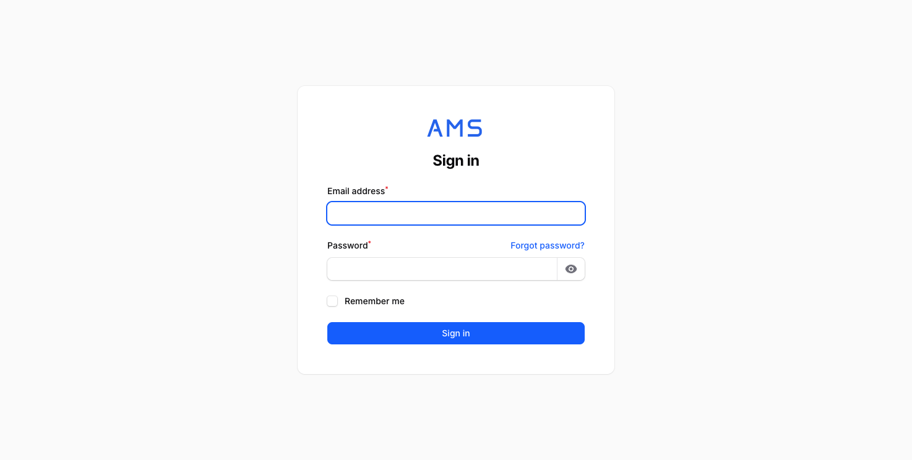
app_authentication_secret, they are redirected to the MFA Challenge screen instead.
| Test ID | Description | Steps | Expected Result | Status |
|---|---|---|---|---|
| ADM-AUTH-001 | Valid login with correct credentials | 1. Navigate to /admin/login2. Enter valid email and password 3. Click "Sign in" |
User is redirected to /admin dashboard. Session is created in the sessions table. |
|
| ADM-AUTH-002 | Invalid login with wrong password | 1. Navigate to /admin/login2. Enter valid email and incorrect password 3. Click "Sign in" |
Error message "These credentials do not match our records." is displayed. User remains on login page. | |
| ADM-AUTH-003 | Login with non-existent email | 1. Navigate to /admin/login2. Enter a non-registered email 3. Click "Sign in" |
Same generic error message displayed. No user enumeration vulnerability. | |
| ADM-AUTH-004 | CSRF token validation | 1. Open login page 2. Inspect form to verify _token hidden field3. Attempt form submission with tampered token |
Request is rejected with 419 status code. CSRF protection is enforced. | |
| ADM-AUTH-005 | Login redirects to MFA when secret is set | 1. Ensure user has app_authentication_secret set2. Login with correct email and password |
User is redirected to MFA challenge page instead of dashboard. |
| Table | Column | Type | Constraints | Screen Mapping |
|---|---|---|---|---|
| users | varchar | UNIQUE, NOT NULL | Email input field | |
| users | password | varchar | NOT NULL (hashed) | Password input field |
| users | app_authentication_secret | text | NULL | Determines MFA redirect after login |
| sessions | id | string | PRIMARY KEY | Created on successful login |
| sessions | user_id | bigint | FK (users.id), NULL | Links session to authenticated user |
| sessions | ip_address | varchar(45) | NULL | Captured from login request |
| sessions | user_agent | text | NULL | Captured from login request |
| sessions | last_activity | int | INDEXED | Updated on each request |
Route: /admin/password-reset
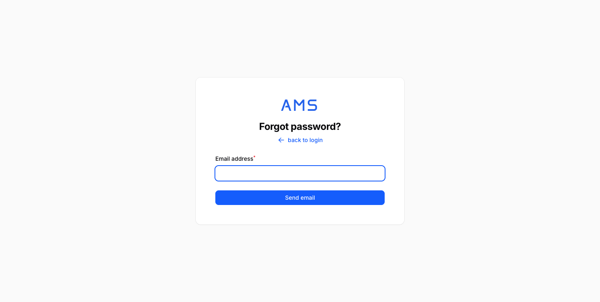
password_reset_tokens table and sends a reset link to the user's registered email address. This follows Laravel's built-in password reset flow integrated through Filament 5.
| Test ID | Description | Steps | Expected Result | Status |
|---|---|---|---|---|
| ADM-AUTH-006 | Request reset with valid email | 1. Navigate to /admin/password-reset2. Enter registered email 3. Click "Send reset link" |
Success notification displayed. A row is inserted into password_reset_tokens table. Email is sent with reset link. |
|
| ADM-AUTH-007 | Request reset with non-existent email | 1. Navigate to /admin/password-reset2. Enter unregistered email 3. Click "Send reset link" |
Same success-like notification displayed to prevent user enumeration. No token created in database. | |
| ADM-AUTH-008 | Reset link expiration | 1. Request a reset link 2. Wait beyond the configured expiration time 3. Click the link in the email |
Expired token error is shown. User must request a new reset link. | |
| ADM-AUTH-009 | Successful password change via reset link | 1. Request reset link 2. Click link in email 3. Enter new password and confirmation 4. Submit |
Password is updated in users table (hashed). User is redirected to login. Token is deleted from password_reset_tokens. |
| Table | Column | Type | Constraints | Screen Mapping |
|---|---|---|---|---|
| password_reset_tokens | string | PRIMARY KEY | Email input field | |
| password_reset_tokens | token | string | NOT NULL (hashed) | Generated token sent via email link |
| password_reset_tokens | created_at | timestamp | NULL | Used for expiration check |
| users | password | varchar | NOT NULL | Updated with new hashed password |
Route: /admin/login
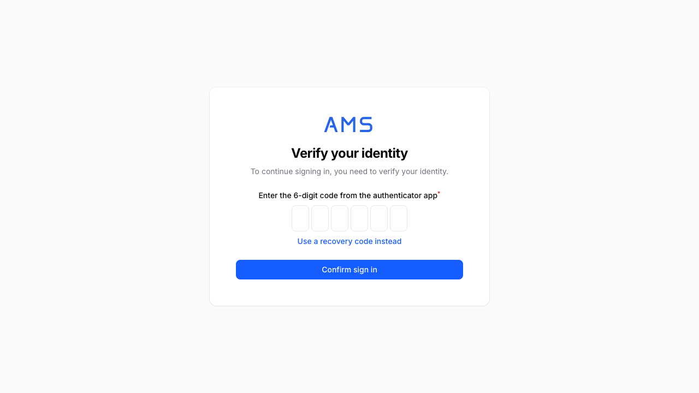
app_authentication_secret. The user must enter a 6-digit TOTP (Time-based One-Time Password) code from their authenticator app (e.g., Google Authenticator, Authy). The code is validated against the stored secret. Users can also use recovery codes stored in app_authentication_recovery_codes if they lose access to their authenticator device.
| Test ID | Description | Steps | Expected Result | Status |
|---|---|---|---|---|
| ADM-AUTH-010 | Valid TOTP code submission | 1. Login with valid credentials (MFA-enabled user) 2. Enter correct 6-digit TOTP code 3. Submit |
User is authenticated and redirected to /admin dashboard. |
|
| ADM-AUTH-011 | Invalid TOTP code submission | 1. Login with valid credentials (MFA-enabled user) 2. Enter incorrect TOTP code 3. Submit |
Error message displayed. User remains on MFA challenge page. | |
| ADM-AUTH-012 | Expired TOTP code | 1. Login with valid credentials 2. Wait for TOTP code to expire (30s window) 3. Enter the now-expired code |
Code is rejected. User must enter a current valid code. | |
| ADM-AUTH-013 | Recovery code usage | 1. Login with valid credentials (MFA-enabled user) 2. Click "Use recovery code" 3. Enter a valid recovery code |
User is authenticated. Used recovery code is consumed and removed from app_authentication_recovery_codes. |
|
| ADM-AUTH-014 | Direct access to MFA page without prior login | 1. Navigate directly to MFA challenge URL without logging in first | User is redirected back to /admin/login. |
| Table | Column | Type | Constraints | Screen Mapping |
|---|---|---|---|---|
| users | app_authentication_secret | text | NULL | Stores the TOTP secret key for code generation/validation |
| users | app_authentication_recovery_codes | text | NULL | JSON array of one-time recovery codes |
Route: /admin
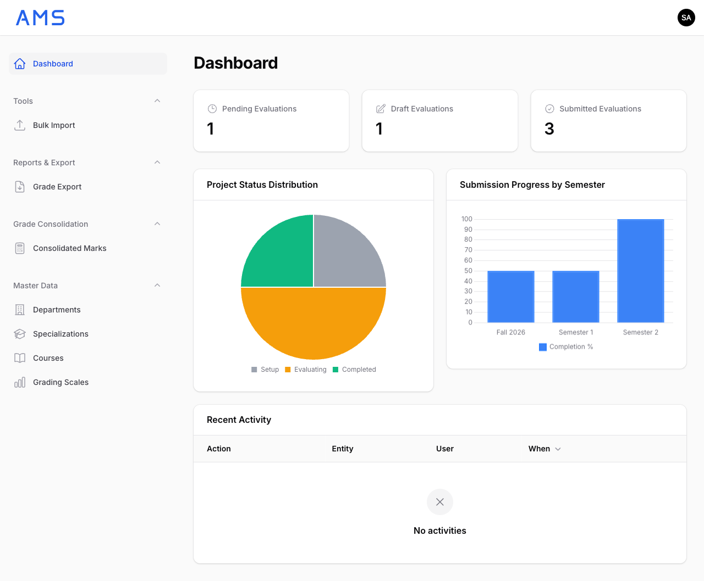
| Test ID | Description | Steps | Expected Result | Status |
|---|---|---|---|---|
| ADM-DASH-001 | Dashboard loads with all four widgets | 1. Login as admin 2. Navigate to /admin |
All four widgets render: PendingEvaluationsWidget, ProjectStatusWidget, SubmissionProgressWidget, RecentActivityWidget. | |
| ADM-DASH-002 | PendingEvaluationsWidget shows correct counts | 1. Verify evaluation counts in database 2. Compare with widget display |
Widget shows correct counts for pending, draft, and submitted evaluations matching evaluations table grouped by status. |
|
| ADM-DASH-003 | ProjectStatusWidget pie chart accuracy | 1. Count projects by status in database 2. Compare with pie chart segments |
Pie chart segments match the number of projects in setup, evaluating, and completed statuses from projects table. |
|
| ADM-DASH-004 | RecentActivityWidget displays last 20 entries | 1. Check activity_log table2. Verify widget shows latest 20 records |
Table displays the 20 most recent activity log entries in descending order by creation date. | |
| ADM-DASH-005 | Dashboard with empty data | 1. Clear all evaluations, projects, and activity logs 2. Load dashboard |
Widgets display gracefully with zero counts, empty charts, and "No records" message in activity table. |
| Table | Column | Type | Constraints | Screen Mapping |
|---|---|---|---|---|
| evaluations | status | enum('pending','draft','submitted') | NOT NULL | PendingEvaluationsWidget counts |
| projects | status | enum('setup','evaluating','completed') | NOT NULL | ProjectStatusWidget pie chart segments |
| evaluations | created_at | timestamp | NOT NULL | SubmissionProgressWidget bar chart timeline |
| activity_log | description | text | NOT NULL | RecentActivityWidget description column |
| activity_log | causer_id | bigint | NULL | RecentActivityWidget user/causer column |
| activity_log | event | varchar | NULL | RecentActivityWidget event type column |
| activity_log | created_at | timestamp | NOT NULL | RecentActivityWidget ordering & timestamp column |
Route: /admin/users
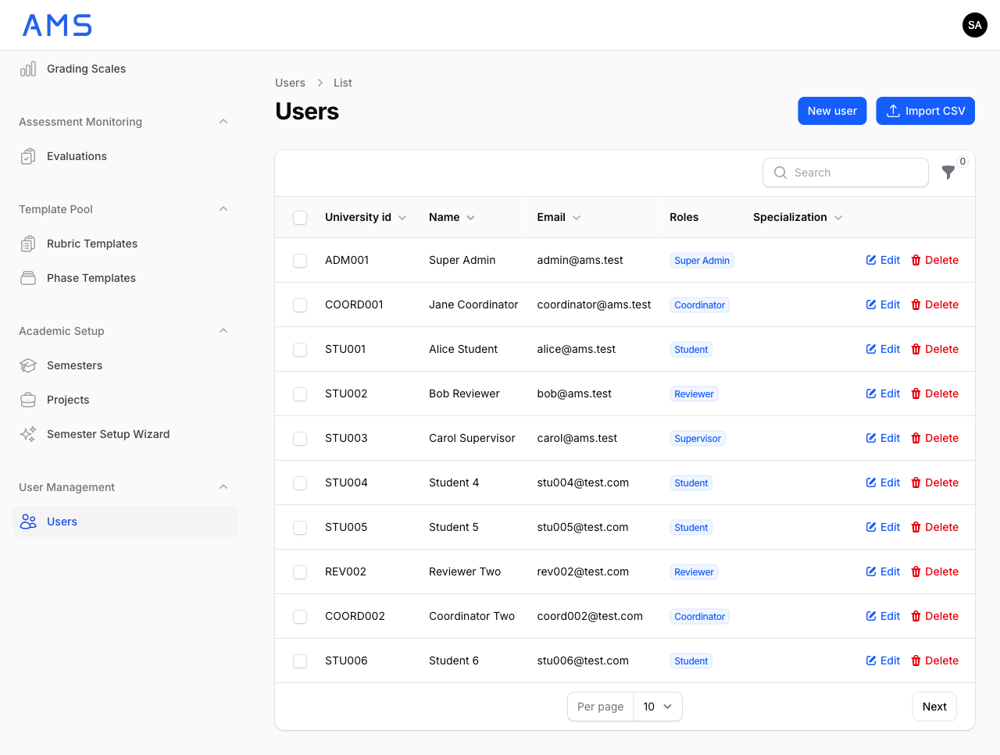
university_id, name, email, role badges (from Spatie roles), and specialization. The table supports global search across user fields, filtering by role and specialization, CSV import for bulk user creation, and row-level edit/delete actions.
| Test ID | Description | Steps | Expected Result | Status |
|---|---|---|---|---|
| ADM-USR-001 | Users table displays all columns correctly | 1. Navigate to /admin/users2. Verify all columns are visible |
Table displays university_id, name, email, roles (as badges), and specialization columns with correct data. | |
| ADM-USR-002 | Search users by name or email | 1. Type a known user's name in the search field 2. Observe filtered results |
Table filters to show only matching users. Search works across name and email fields. | |
| ADM-USR-003 | Filter users by role | 1. Click the role filter 2. Select a specific role 3. Observe filtered results |
Table shows only users assigned the selected role. Count updates accordingly. | |
| ADM-USR-004 | Filter users by specialization | 1. Click the specialization filter 2. Select a specialization 3. Observe results |
Table shows only users belonging to the selected specialization. | |
| ADM-USR-005 | Delete user action | 1. Click the delete action on a user row 2. Confirm deletion in the modal |
User is soft-deleted (deleted_at set). User no longer appears in the list. |
| Table | Column | Type | Constraints | Screen Mapping |
|---|---|---|---|---|
| users | id | bigint | PRIMARY KEY, AUTO_INCREMENT | Internal row identifier |
| users | university_id | varchar | UNIQUE, NOT NULL | University ID column |
| users | name | varchar | NOT NULL | Name column |
| users | varchar | UNIQUE, NOT NULL | Email column | |
| users | specialization_id | bigint | FK (specializations.id), NULL | Specialization column (joined) |
| users | deleted_at | timestamp | NULL | Soft delete - hidden when set |
| model_has_roles | role_id | bigint | FK (roles.id) | Roles badges (via pivot) |
| model_has_roles | model_id | bigint | Composite PK with role_id, model_type | Links role to specific user |
| roles | name | string | UNIQUE(name, guard_name) | Role badge label text |
Route: /admin/users/create
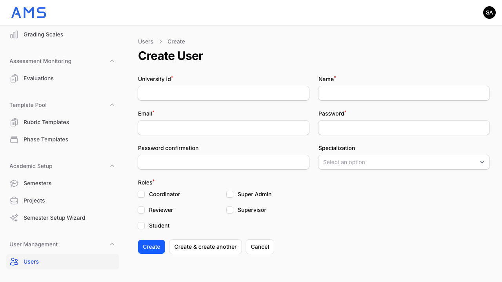
university_id (unique, max 255 chars), name (max 255 chars), email (unique, valid email), password (min 8 chars, confirmed with a confirmation field), an optional specialization select dropdown, and a roles checkbox list displayed in 2 columns. All validation is handled server-side by Filament with real-time feedback.
| Test ID | Description | Steps | Expected Result | Status |
|---|---|---|---|---|
| ADM-USR-006 | Create user with all valid fields | 1. Navigate to /admin/users/create2. Fill in university_id, name, email, password, confirm password 3. Select a specialization 4. Check one or more roles 5. Click "Create" |
User is created in users table. Roles are linked in model_has_roles. Redirect to users list with success notification. |
|
| ADM-USR-007 | Duplicate university_id validation | 1. Try to create a user with an existing university_id 2. Submit form |
Validation error: "The university id has already been taken." User is not created. | |
| ADM-USR-008 | Duplicate email validation | 1. Try to create a user with an existing email 2. Submit form |
Validation error: "The email has already been taken." User is not created. | |
| ADM-USR-009 | Password confirmation mismatch | 1. Enter password in password field 2. Enter a different value in confirm password 3. Submit form |
Validation error: "The password confirmation does not match." | |
| ADM-USR-010 | Password minimum length validation | 1. Enter a password shorter than 8 characters 2. Submit form |
Validation error: "The password must be at least 8 characters." |
| Table | Column | Type | Constraints | Screen Mapping |
|---|---|---|---|---|
| users | university_id | varchar(255) | UNIQUE, NOT NULL | University ID text input |
| users | name | varchar(255) | NOT NULL | Name text input |
| users | varchar(255) | UNIQUE, NOT NULL, email format | Email text input | |
| users | password | varchar | NOT NULL, min 8 chars (hashed) | Password + confirmation inputs |
| users | specialization_id | bigint | FK (specializations.id), NULL | Specialization select dropdown |
| model_has_roles | role_id | bigint | FK (roles.id), Composite PK | Roles checkbox list |
| model_has_roles | model_type | string | Composite PK | Set to App\Models\User |
| model_has_roles | model_id | bigint | Composite PK | Newly created user's ID |
Route: /admin/users/{id}/edit
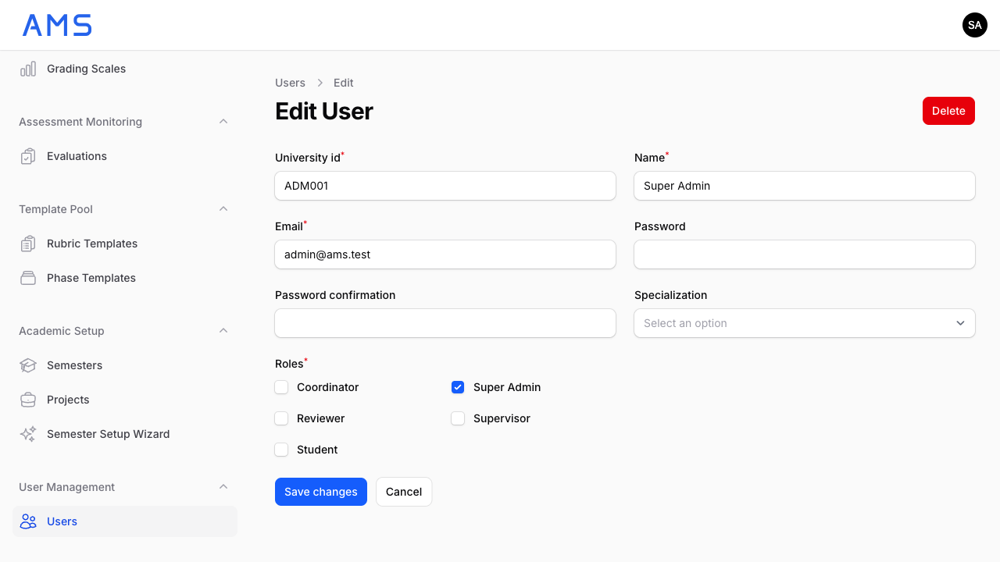
password field is optional -- leaving it blank preserves the current password. A delete action is available in the page header for removing the user (soft delete). All the same validation rules apply, with uniqueness checks excluding the current record.
| Test ID | Description | Steps | Expected Result | Status |
|---|---|---|---|---|
| ADM-USR-011 | Edit user successfully without changing password | 1. Navigate to /admin/users/{id}/edit2. Change user name 3. Leave password fields blank 4. Click "Save changes" |
User name is updated. Password remains unchanged in database. Success notification shown. | |
| ADM-USR-012 | Edit user with new password | 1. Navigate to edit page 2. Enter new password and confirmation 3. Save |
Password is updated (re-hashed) in the users table. Other fields remain unchanged. |
|
| ADM-USR-013 | Unique validation excludes current record | 1. Edit a user 2. Keep the same university_id and email 3. Save |
No uniqueness validation error. The user's own values are excluded from the unique check. | |
| ADM-USR-014 | Delete user from edit page | 1. Navigate to user edit page 2. Click the delete action in the header 3. Confirm deletion |
User is soft-deleted (deleted_at set). Redirect to users list with success notification. |
|
| ADM-USR-015 | Change user roles | 1. Navigate to edit page 2. Uncheck existing roles and check new ones 3. Save |
Old role entries removed from model_has_roles. New role entries added. User's effective permissions change. |
| Table | Column | Type | Constraints | Screen Mapping |
|---|---|---|---|---|
| users | university_id | varchar(255) | UNIQUE (ignore self) | University ID text input (pre-filled) |
| users | name | varchar(255) | NOT NULL | Name text input (pre-filled) |
| users | varchar(255) | UNIQUE (ignore self) | Email text input (pre-filled) | |
| users | password | varchar | NULL on edit (optional) | Password field (blank = no change) |
| users | specialization_id | bigint | FK (specializations.id), NULL | Specialization select (pre-selected) |
| users | deleted_at | timestamp | NULL (soft delete) | Delete header action |
| model_has_roles | role_id, model_type, model_id | bigint, string, bigint | Composite PK | Roles checkbox list (synced on save) |
Route: /admin/departments
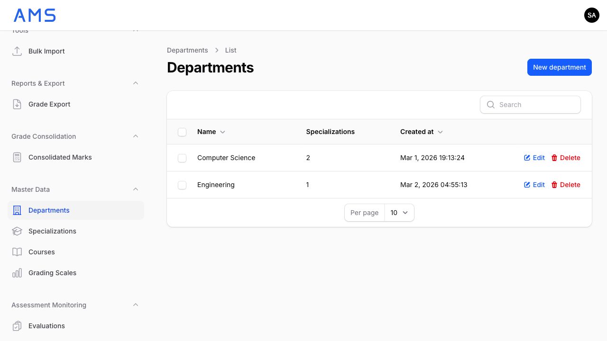
name, a count of associated specializations (computed relationship count), and the created_at timestamp. The table supports search, pagination, and row-level edit/delete actions.
| Test ID | Description | Steps | Expected Result | Status |
|---|---|---|---|---|
| ADM-DEP-001 | Departments table displays correctly | 1. Navigate to /admin/departments2. Verify columns: name, specializations count, created_at |
Table displays all non-deleted departments with correct specializations count and creation dates. | |
| ADM-DEP-002 | Specializations count is accurate | 1. Pick a department row 2. Count its specializations in the database 3. Compare with the displayed count |
The displayed count matches SELECT COUNT(*) FROM specializations WHERE department_id = ? AND deleted_at IS NULL. |
|
| ADM-DEP-003 | Search departments by name | 1. Enter a department name in the search field 2. Observe filtered results |
Table filters to show only departments whose names match the search query. | |
| ADM-DEP-004 | Delete department | 1. Click delete action on a department 2. Confirm deletion |
Department is soft-deleted. Associated specializations are handled per cascade rules. |
| Table | Column | Type | Constraints | Screen Mapping |
|---|---|---|---|---|
| departments | id | bigint | PRIMARY KEY, AUTO_INCREMENT | Internal row identifier |
| departments | name | varchar | NOT NULL | Name column |
| departments | created_at | timestamp | NOT NULL | Created At column |
| departments | deleted_at | timestamp | NULL | Soft delete - hidden when set |
| specializations | department_id | bigint | FK (departments.id), CASCADE | Specializations Count (aggregated) |
Route: /admin/departments/create
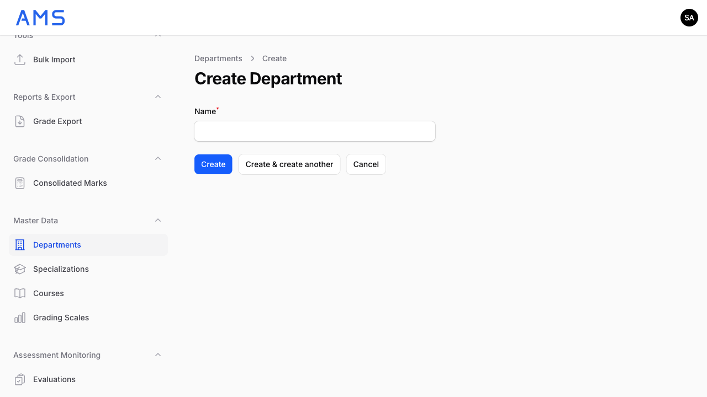
name field to add a new department. The name must be unique across all departments and cannot exceed 255 characters. On successful creation, the user is redirected to the departments list.
| Test ID | Description | Steps | Expected Result | Status |
|---|---|---|---|---|
| ADM-DEP-005 | Create department with valid name | 1. Navigate to /admin/departments/create2. Enter a unique department name 3. Click "Create" |
Department is created in departments table. Redirect to list with success notification. |
|
| ADM-DEP-006 | Duplicate name validation | 1. Enter an existing department name 2. Submit form |
Validation error: "The name has already been taken." Department is not created. | |
| ADM-DEP-007 | Empty name validation | 1. Leave name field empty 2. Submit form |
Validation error: "The name field is required." | |
| ADM-DEP-008 | Name exceeds max length | 1. Enter a name exceeding 255 characters 2. Submit form |
Validation error: "The name must not be greater than 255 characters." |
| Table | Column | Type | Constraints | Screen Mapping |
|---|---|---|---|---|
| departments | name | varchar(255) | UNIQUE, NOT NULL | Name text input |
| departments | created_at | timestamp | NOT NULL | Auto-set on creation |
| departments | updated_at | timestamp | NOT NULL | Auto-set on creation |
Route: /admin/departments/{id}/edit
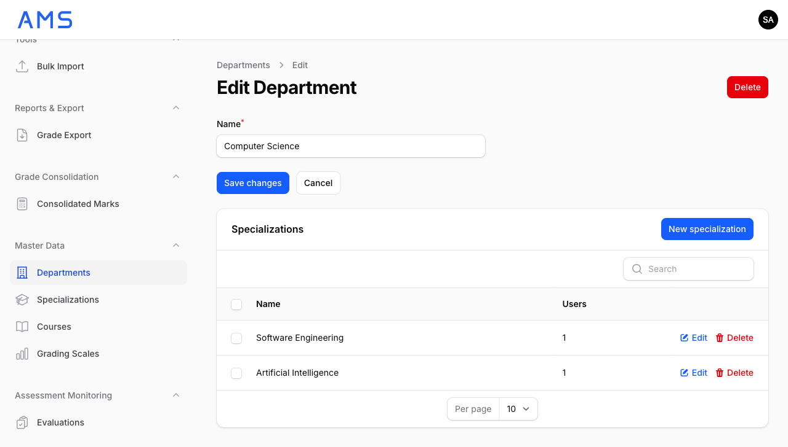
Specializations. This inline relation manager enables administrators to create, edit, and delete specializations directly within the department edit page, providing a convenient way to manage the department's child specializations without navigating away.
| Test ID | Description | Steps | Expected Result | Status |
|---|---|---|---|---|
| ADM-DEP-009 | Edit department name | 1. Navigate to /admin/departments/{id}/edit2. Change the name 3. Click "Save changes" |
Department name is updated in database. Success notification displayed. | |
| ADM-DEP-010 | Create specialization via Relation Manager | 1. On department edit page 2. Click "Create" in the Specializations RM 3. Enter specialization name 4. Save |
New specialization created in specializations table with department_id set to current department. Appears in RM table. |
|
| ADM-DEP-011 | Edit specialization via Relation Manager | 1. Click edit on a specialization row in the RM 2. Change the name 3. Save |
Specialization name is updated in database. RM table refreshes to show new name. | |
| ADM-DEP-012 | Delete specialization via Relation Manager | 1. Click delete on a specialization row in the RM 2. Confirm deletion |
Specialization is soft-deleted. Removed from RM table display. | |
| ADM-DEP-013 | Unique name validation on edit (exclude self) | 1. Change name to an existing department's name 2. Save |
Validation error: "The name has already been taken." |
| Table | Column | Type | Constraints | Screen Mapping |
|---|---|---|---|---|
| departments | name | varchar(255) | UNIQUE (ignore self), NOT NULL | Name text input (pre-filled) |
| departments | updated_at | timestamp | NOT NULL | Auto-updated on save |
| specializations | id | bigint | PRIMARY KEY | RM table rows |
| specializations | department_id | bigint | FK (departments.id), CASCADE | Auto-set to current department |
| specializations | name | varchar | NOT NULL | RM create/edit name field |
| specializations | deleted_at | timestamp | NULL | RM delete action (soft delete) |
Route: /admin/specializations
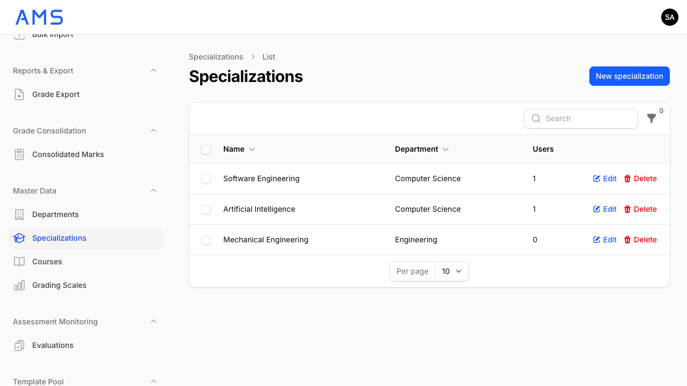
name, parent department name (via relationship), and users_count (the number of users assigned to each specialization). The table supports filtering by department and global search.
| Test ID | Description | Steps | Expected Result | Status |
|---|---|---|---|---|
| ADM-SPC-001 | Specializations table displays correctly | 1. Navigate to /admin/specializations2. Verify columns: name, department name, users count |
Table shows all non-deleted specializations with correct department relationship and user count. | |
| ADM-SPC-002 | Filter by department | 1. Click the department filter 2. Select a specific department 3. Observe filtered results |
Table shows only specializations belonging to the selected department. | |
| ADM-SPC-003 | Users count is accurate | 1. Pick a specialization row 2. Count users with that specialization_id in database 3. Compare displayed count |
Displayed count matches SELECT COUNT(*) FROM users WHERE specialization_id = ? AND deleted_at IS NULL. |
|
| ADM-SPC-004 | Search specializations | 1. Enter a specialization name in the search field 2. Observe results |
Table filters to show matching specialization names. |
| Table | Column | Type | Constraints | Screen Mapping |
|---|---|---|---|---|
| specializations | id | bigint | PRIMARY KEY, AUTO_INCREMENT | Internal row identifier |
| specializations | name | varchar | NOT NULL | Name column |
| specializations | department_id | bigint | FK (departments.id), CASCADE | Department Name column (joined) |
| specializations | deleted_at | timestamp | NULL | Soft delete - hidden when set |
| users | specialization_id | bigint | FK (specializations.id), NULL | Users Count (aggregated) |
Route: /admin/specializations/create
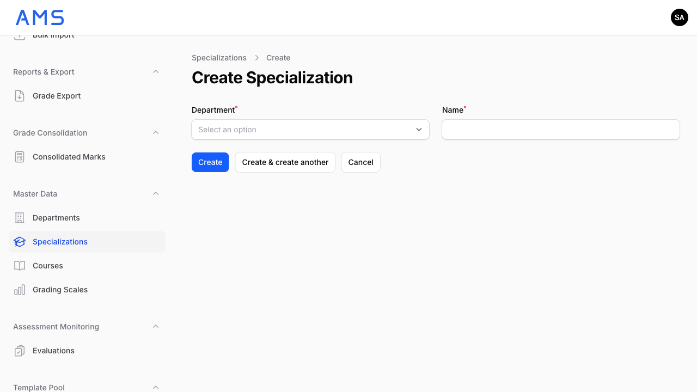
department select dropdown (required, selecting from existing departments) and a name text field (max 255 characters). The specialization is linked to the selected department via the department_id foreign key.
| Test ID | Description | Steps | Expected Result | Status |
|---|---|---|---|---|
| ADM-SPC-005 | Create specialization with valid data | 1. Navigate to /admin/specializations/create2. Select a department 3. Enter specialization name 4. Click "Create" |
Specialization created in specializations table with correct department_id. Redirect to list with success notification. |
|
| ADM-SPC-006 | Department field is required | 1. Leave department unselected 2. Enter a name 3. Submit |
Validation error: "The department field is required." | |
| ADM-SPC-007 | Name field is required | 1. Select a department 2. Leave name empty 3. Submit |
Validation error: "The name field is required." | |
| ADM-SPC-008 | Name max length validation | 1. Select a department 2. Enter a name exceeding 255 characters 3. Submit |
Validation error: "The name must not be greater than 255 characters." |
| Table | Column | Type | Constraints | Screen Mapping |
|---|---|---|---|---|
| specializations | department_id | bigint | FK (departments.id), CASCADE, NOT NULL | Department select dropdown |
| specializations | name | varchar(255) | NOT NULL | Name text input |
| specializations | created_at | timestamp | NOT NULL | Auto-set on creation |
| specializations | updated_at | timestamp | NOT NULL | Auto-set on creation |
Route: /admin/specializations/{id}/edit
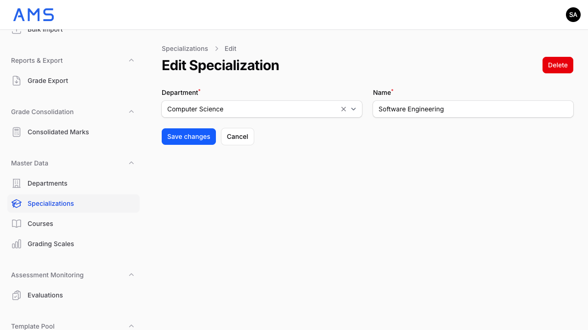
department and name. The form is pre-populated with the current values. Changing the department reassigns the specialization to a different parent department.
| Test ID | Description | Steps | Expected Result | Status |
|---|---|---|---|---|
| ADM-SPC-009 | Edit specialization name | 1. Navigate to /admin/specializations/{id}/edit2. Change the name 3. Click "Save changes" |
Specialization name updated in database. Success notification displayed. | |
| ADM-SPC-010 | Change specialization department | 1. Select a different department from the dropdown 2. Save |
department_id updated in specializations table. Specialization now appears under the new department. |
|
| ADM-SPC-011 | Delete specialization from edit page | 1. Click delete action in header 2. Confirm deletion |
Specialization is soft-deleted. Users previously linked retain their specialization_id but the specialization is hidden from lists. |
| Table | Column | Type | Constraints | Screen Mapping |
|---|---|---|---|---|
| specializations | department_id | bigint | FK (departments.id), CASCADE | Department select dropdown (pre-selected) |
| specializations | name | varchar(255) | NOT NULL | Name text input (pre-filled) |
| specializations | updated_at | timestamp | NOT NULL | Auto-updated on save |
| specializations | deleted_at | timestamp | NULL | Delete header action (soft delete) |
Route: /admin/courses
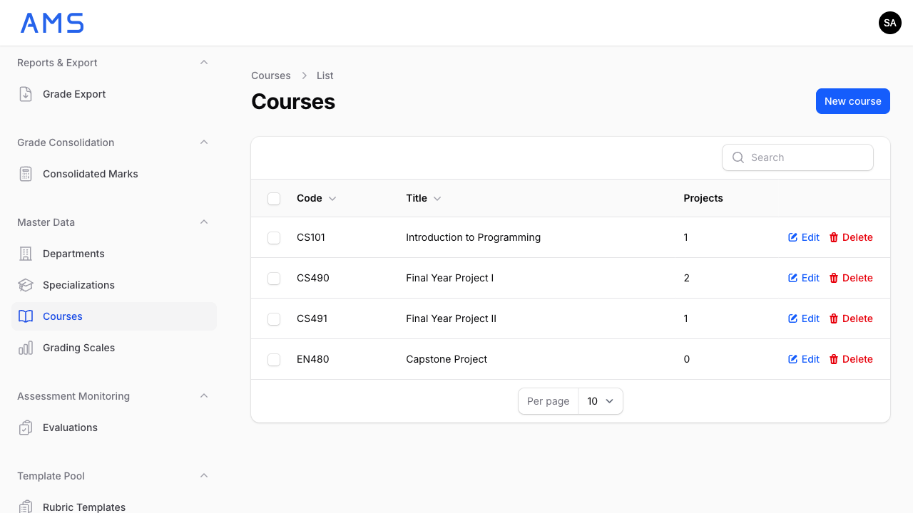
code, title, and projects_count (the number of projects associated with each course). The table supports search, pagination, and row-level edit/delete actions.
| Test ID | Description | Steps | Expected Result | Status |
|---|---|---|---|---|
| ADM-CRS-001 | Courses table displays correctly | 1. Navigate to /admin/courses2. Verify columns: code, title, projects count |
Table shows all non-deleted courses with correct project counts. | |
| ADM-CRS-002 | Projects count is accurate | 1. Pick a course row 2. Count its projects in the database 3. Compare with displayed count |
Displayed count matches SELECT COUNT(*) FROM projects WHERE course_id = ? AND deleted_at IS NULL. |
|
| ADM-CRS-003 | Search courses by code or title | 1. Enter a course code or title in the search field 2. Observe results |
Table filters to show matching courses. | |
| ADM-CRS-004 | Delete course | 1. Click delete action on a course row 2. Confirm deletion |
Course is soft-deleted. Removed from list view. |
| Table | Column | Type | Constraints | Screen Mapping |
|---|---|---|---|---|
| courses | id | bigint | PRIMARY KEY, AUTO_INCREMENT | Internal row identifier |
| courses | code | varchar | NOT NULL | Code column |
| courses | title | varchar | NOT NULL | Title column |
| courses | deleted_at | timestamp | NULL | Soft delete - hidden when set |
| projects | course_id | bigint | FK (courses.id) | Projects Count (aggregated) |
Route: /admin/courses/create
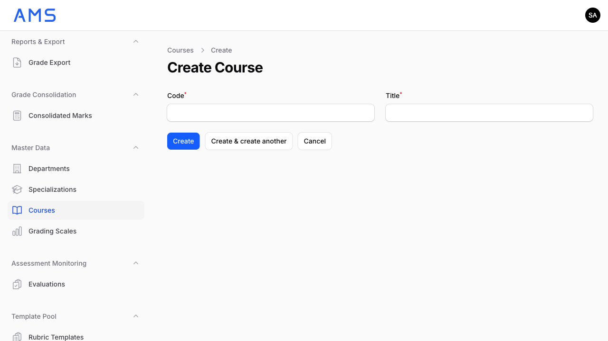
code (unique, max 20 characters) and title (unique, max 255 characters). The code serves as a short identifier (e.g., "CS101") while the title is the full course name.
| Test ID | Description | Steps | Expected Result | Status |
|---|---|---|---|---|
| ADM-CRS-005 | Create course with valid data | 1. Navigate to /admin/courses/create2. Enter unique code and title 3. Click "Create" |
Course created in courses table. Redirect to list with success notification. |
|
| ADM-CRS-006 | Duplicate code validation | 1. Enter an existing course code 2. Submit |
Validation error: "The code has already been taken." | |
| ADM-CRS-007 | Duplicate title validation | 1. Enter an existing course title 2. Submit |
Validation error: "The title has already been taken." | |
| ADM-CRS-008 | Code max length validation | 1. Enter a code exceeding 20 characters 2. Submit |
Validation error: "The code must not be greater than 20 characters." | |
| ADM-CRS-009 | Title max length validation | 1. Enter a title exceeding 255 characters 2. Submit |
Validation error: "The title must not be greater than 255 characters." |
| Table | Column | Type | Constraints | Screen Mapping |
|---|---|---|---|---|
| courses | code | varchar(20) | UNIQUE, NOT NULL | Code text input |
| courses | title | varchar(255) | UNIQUE, NOT NULL | Title text input |
| courses | created_at | timestamp | NOT NULL | Auto-set on creation |
| courses | updated_at | timestamp | NOT NULL | Auto-set on creation |
Route: /admin/courses/{id}/edit
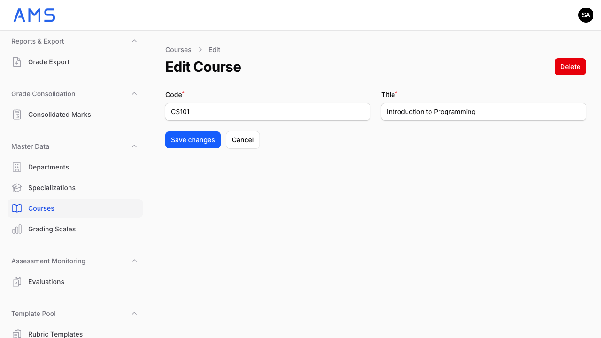
code and title. The form is pre-populated with the current values. Uniqueness validation excludes the current record to allow saving without changes. A delete action is available in the page header.
| Test ID | Description | Steps | Expected Result | Status |
|---|---|---|---|---|
| ADM-CRS-010 | Edit course code and title | 1. Navigate to /admin/courses/{id}/edit2. Change code and title 3. Click "Save changes" |
Course updated in database. Success notification displayed. | |
| ADM-CRS-011 | Save without changes | 1. Open edit form 2. Click save without modifications |
No validation errors. Record saved with updated updated_at timestamp. |
|
| ADM-CRS-012 | Unique validation excludes current record | 1. Keep the same code and title 2. Save |
No uniqueness violation. Current record's values are excluded from unique checks. | |
| ADM-CRS-013 | Delete course from edit page | 1. Click delete action in header 2. Confirm deletion |
Course is soft-deleted. Redirect to courses list. |
| Table | Column | Type | Constraints | Screen Mapping |
|---|---|---|---|---|
| courses | code | varchar(20) | UNIQUE (ignore self), NOT NULL | Code text input (pre-filled) |
| courses | title | varchar(255) | UNIQUE (ignore self), NOT NULL | Title text input (pre-filled) |
| courses | updated_at | timestamp | NOT NULL | Auto-updated on save |
| courses | deleted_at | timestamp | NULL | Delete header action (soft delete) |
Route: /admin/grading-scales
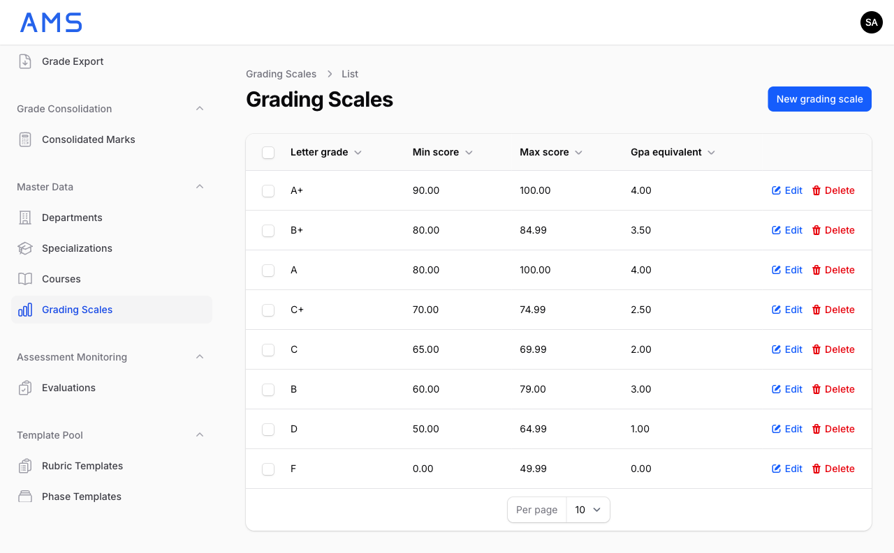
letter_grade (e.g., A+, A, B+), min_score, max_score, and gpa_equivalent. These scales define the mapping between numeric scores and letter grades used throughout the evaluation system.
| Test ID | Description | Steps | Expected Result | Status |
|---|---|---|---|---|
| ADM-GRD-001 | Grading scales table displays correctly | 1. Navigate to /admin/grading-scales2. Verify columns: letter_grade, min_score, max_score, gpa_equivalent |
Table shows all non-deleted grading scales with correct values, sorted descending. | |
| ADM-GRD-002 | Default sort order is descending | 1. Load grading scales list 2. Check row order |
Rows are sorted in descending order (highest grade first, e.g., A+ at top). | |
| ADM-GRD-003 | Score ranges have no gaps or overlaps | 1. Inspect all grading scale rows 2. Verify min/max ranges are contiguous |
Each grade's min_score is one increment above the previous grade's max_score. Full range 0-100 is covered. |
|
| ADM-GRD-004 | Delete grading scale | 1. Click delete on a grading scale row 2. Confirm deletion |
Grading scale is soft-deleted. Removed from list view. |
| Table | Column | Type | Constraints | Screen Mapping |
|---|---|---|---|---|
| grading_scales | id | bigint | PRIMARY KEY, AUTO_INCREMENT | Internal row identifier |
| grading_scales | letter_grade | varchar(10) | NOT NULL | Letter Grade column |
| grading_scales | min_score | decimal(5,2) | NOT NULL | Min Score column |
| grading_scales | max_score | decimal(5,2) | NOT NULL | Max Score column |
| grading_scales | gpa_equivalent | decimal(3,2) | NOT NULL | GPA Equivalent column |
| grading_scales | deleted_at | timestamp | NULL | Soft delete - hidden when set |
Route: /admin/grading-scales/create
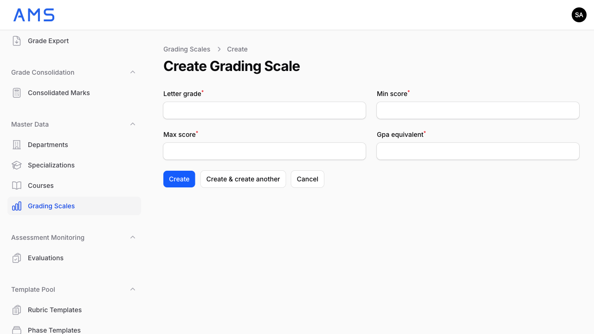
letter_grade (max 10 characters, e.g., "A+"), min_score (0-100 range with overlap validation against existing scales), max_score (must be greater than min_score), and gpa_equivalent (0-4 range, e.g., 4.00 for an A+). The overlap validation ensures no two grading scales have conflicting score ranges.
| Test ID | Description | Steps | Expected Result | Status |
|---|---|---|---|---|
| ADM-GRD-005 | Create grading scale with valid data | 1. Navigate to /admin/grading-scales/create2. Enter letter_grade, min_score, max_score, gpa_equivalent 3. Click "Create" |
Grading scale created in grading_scales table. Redirect to list with success notification. |
|
| ADM-GRD-006 | Min score must be between 0 and 100 | 1. Enter min_score as -1 or 101 2. Submit |
Validation error for out-of-range value. | |
| ADM-GRD-007 | Max score must be greater than min score | 1. Enter max_score less than or equal to min_score 2. Submit |
Validation error: max_score must be greater than min_score. | |
| ADM-GRD-008 | Score range overlap validation | 1. Enter a min/max range that overlaps with an existing grading scale 2. Submit |
Validation error indicating score range overlaps with existing grade. Scale is not created. | |
| ADM-GRD-009 | GPA equivalent range validation (0-4) | 1. Enter gpa_equivalent as 4.5 2. Submit |
Validation error: GPA equivalent must be between 0 and 4. |
| Table | Column | Type | Constraints | Screen Mapping |
|---|---|---|---|---|
| grading_scales | letter_grade | varchar(10) | NOT NULL, max 10 chars | Letter Grade text input |
| grading_scales | min_score | decimal(5,2) | NOT NULL, range 0-100, no overlap | Min Score numeric input |
| grading_scales | max_score | decimal(5,2) | NOT NULL, > min_score | Max Score numeric input |
| grading_scales | gpa_equivalent | decimal(3,2) | NOT NULL, range 0-4 | GPA Equivalent numeric input |
| grading_scales | created_at | timestamp | NOT NULL | Auto-set on creation |
Route: /admin/grading-scales/{id}/edit
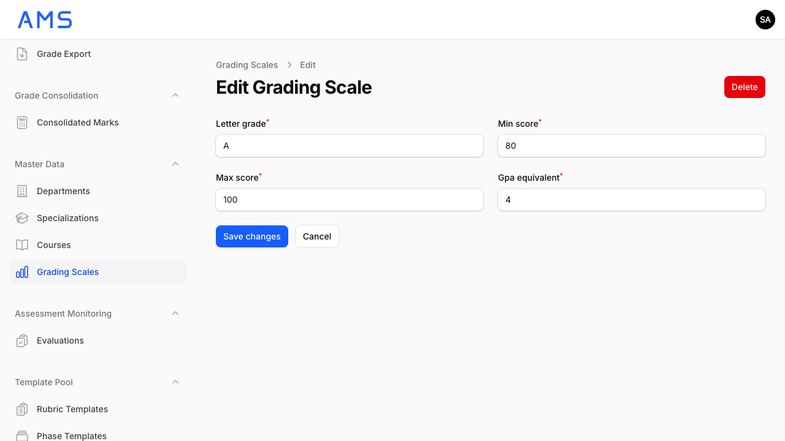
letter_grade, min_score, max_score, and gpa_equivalent. The same validation rules apply, including score range overlap checking (which excludes the current record from the overlap check). A delete action is available in the page header.
| Test ID | Description | Steps | Expected Result | Status |
|---|---|---|---|---|
| ADM-GRD-010 | Edit grading scale successfully | 1. Navigate to /admin/grading-scales/{id}/edit2. Modify letter_grade and score range 3. Click "Save changes" |
Grading scale updated in database. Success notification displayed. | |
| ADM-GRD-011 | Overlap validation excludes current record | 1. Open edit form 2. Keep the same min/max scores 3. Save |
No overlap validation error. Current record is excluded from overlap checks. | |
| ADM-GRD-012 | Change score range with overlap conflict | 1. Modify min/max to overlap another existing grade 2. Save |
Validation error indicating overlap with existing grade scale. | |
| ADM-GRD-013 | Delete grading scale from edit page | 1. Click delete action in header 2. Confirm deletion |
Grading scale is soft-deleted. Redirect to grading scales list. | |
| ADM-GRD-014 | Update GPA equivalent only | 1. Change only the gpa_equivalent value 2. Save |
Only gpa_equivalent and updated_at columns change in database. |
| Table | Column | Type | Constraints | Screen Mapping |
|---|---|---|---|---|
| grading_scales | letter_grade | varchar(10) | NOT NULL | Letter Grade text input (pre-filled) |
| grading_scales | min_score | decimal(5,2) | NOT NULL, range 0-100, no overlap (ignore self) | Min Score numeric input (pre-filled) |
| grading_scales | max_score | decimal(5,2) | NOT NULL, > min_score | Max Score numeric input (pre-filled) |
| grading_scales | gpa_equivalent | decimal(3,2) | NOT NULL, range 0-4 | GPA Equivalent numeric input (pre-filled) |
| grading_scales | updated_at | timestamp | NOT NULL | Auto-updated on save |
| grading_scales | deleted_at | timestamp | NULL | Delete header action (soft delete) |
Route: /admin/semesters
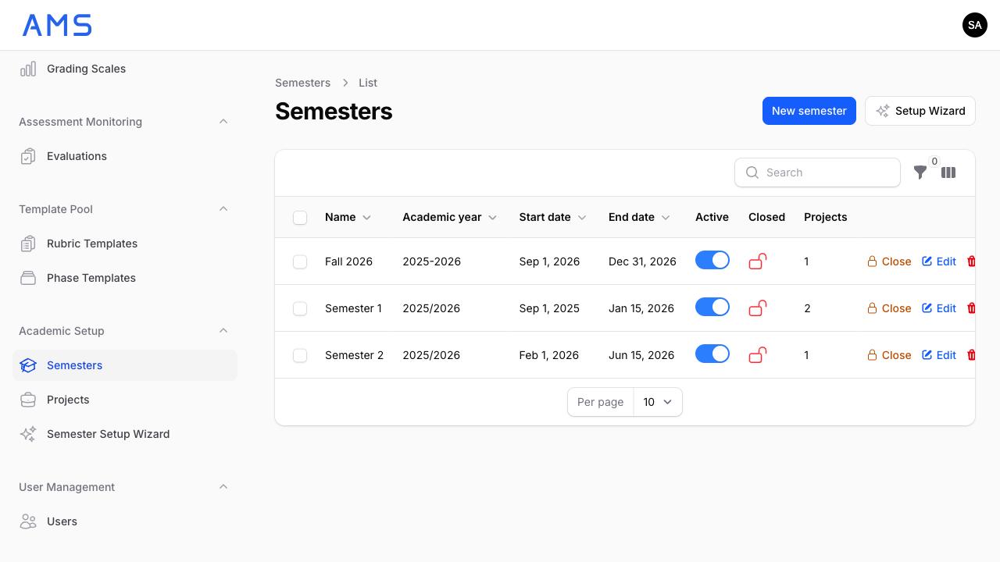
name, academic_year, start_date, end_date, is_active (rendered as a toggle column), is_closed (rendered with a lock icon), and projects_count (number of associated projects). Filters include a TernaryFilter for active/closed status and a SelectFilter for academic year. Row actions include closeSemester (with confirmation modal, hidden when the semester is already closed), edit (hidden when closed), and delete (hidden when closed). Coordinator-role users are scoped to see only semesters they are assigned to via the coordinator_semester pivot table.
| Test ID | Description | Steps | Expected Result | Status |
|---|---|---|---|---|
| ADM-SEM-001 | Semesters table displays all columns correctly | 1. Navigate to /admin/semesters2. Verify all columns are visible: name, academic_year, start_date, end_date, is_active toggle, is_closed lock icon, projects_count |
Table renders all columns with correct data. The is_active column shows a toggle switch. The is_closed column displays a lock icon when true. |
|
| ADM-SEM-002 | Filter semesters by active/closed status | 1. Click the active TernaryFilter 2. Select "Yes" to show only active semesters 3. Then select "No" to show inactive 4. Repeat with closed TernaryFilter |
Table filters correctly based on is_active and is_closed boolean values. Count updates to reflect filtered results. |
|
| ADM-SEM-003 | Filter semesters by academic year | 1. Click the academic_year SelectFilter 2. Choose a specific academic year (e.g., "2025-2026") 3. Observe filtered results |
Table shows only semesters matching the selected academic year. | |
| ADM-SEM-004 | Close semester action with confirmation | 1. Find an open semester (is_closed = false) 2. Click the "closeSemester" action 3. Confirm in the modal dialog |
Semester's is_closed is set to true in the database. Lock icon appears. Edit, delete, and closeSemester actions become hidden for this row. |
|
| ADM-SEM-005 | Coordinator scoping - coordinators see only assigned semesters | 1. Login as a user with only the Coordinator role 2. Navigate to /admin/semesters3. Verify only assigned semesters are visible |
Table shows only semesters where a row exists in coordinator_semester for the logged-in user. Admin users see all semesters. |
| Table | Column | Type | Constraints | Screen Mapping |
|---|---|---|---|---|
| semesters | id | bigint | PRIMARY KEY, AUTO_INCREMENT | Internal row identifier |
| semesters | name | varchar | NOT NULL | Name column |
| semesters | academic_year | varchar | NOT NULL | Academic Year column & SelectFilter |
| semesters | start_date | date | NULL | Start Date column |
| semesters | end_date | date | NULL | End Date column |
| semesters | is_active | boolean | NOT NULL, DEFAULT true | Active toggle column & TernaryFilter |
| semesters | is_closed | boolean | NOT NULL, DEFAULT false | Closed lock icon column & TernaryFilter, controls action visibility |
| semesters | deleted_at | timestamp | NULL | Soft delete - hidden when set |
| projects | semester_id | bigint | FK (semesters.id) | Projects Count (aggregated) |
| coordinator_semester | user_id | bigint | FK (users.id), CASCADE | Coordinator scoping pivot |
| coordinator_semester | semester_id | bigint | FK (semesters.id), CASCADE | Coordinator scoping pivot |
Route: /admin/semesters/create
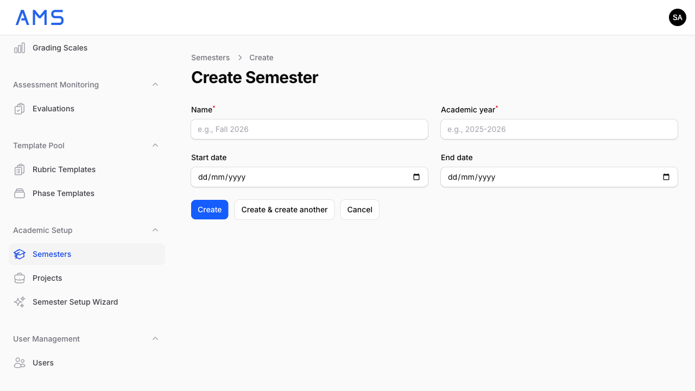
name (required, max 255 characters, placeholder "Fall 2026"), academic_year (required, max 9 characters, placeholder "2025-2026"), start_date (optional DatePicker), and end_date (optional DatePicker, validated as afterOrEqual the start_date when both are provided). The semester is created with is_active defaulting to true and is_closed defaulting to false.
| Test ID | Description | Steps | Expected Result | Status |
|---|---|---|---|---|
| ADM-SEM-006 | Create semester with all valid fields | 1. Navigate to /admin/semesters/create2. Enter name (e.g., "Fall 2026") 3. Enter academic_year (e.g., "2025-2026") 4. Pick start_date and end_date via DatePicker 5. Click "Create" |
Semester is created in semesters table with is_active=true and is_closed=false defaults. Redirect to semesters list with success notification. |
|
| ADM-SEM-007 | Create semester without optional dates | 1. Enter name and academic_year only 2. Leave start_date and end_date blank 3. Click "Create" |
Semester is created with start_date and end_date as NULL in the database. No validation errors. |
|
| ADM-SEM-008 | End date must be after or equal to start date | 1. Select a start_date of 2026-09-01 2. Select an end_date of 2026-08-01 (before start) 3. Submit |
Validation error: "The end date must be a date after or equal to start date." Semester is not created. | |
| ADM-SEM-009 | Required field validation for name and academic_year | 1. Leave name and academic_year fields empty 2. Submit form |
Validation errors: "The name field is required." and "The academic year field is required." |
| Table | Column | Type | Constraints | Screen Mapping |
|---|---|---|---|---|
| semesters | name | varchar(255) | NOT NULL | Name text input (placeholder "Fall 2026") |
| semesters | academic_year | varchar(9) | NOT NULL, max 9 chars | Academic Year text input (placeholder "2025-2026") |
| semesters | start_date | date | NULL | Start Date DatePicker |
| semesters | end_date | date | NULL, afterOrEqual start_date | End Date DatePicker |
| semesters | is_active | boolean | NOT NULL, DEFAULT true | Auto-set on creation |
| semesters | is_closed | boolean | NOT NULL, DEFAULT false | Auto-set on creation |
| semesters | created_at | timestamp | NOT NULL | Auto-set on creation |
Route: /admin/semesters/{id}/edit
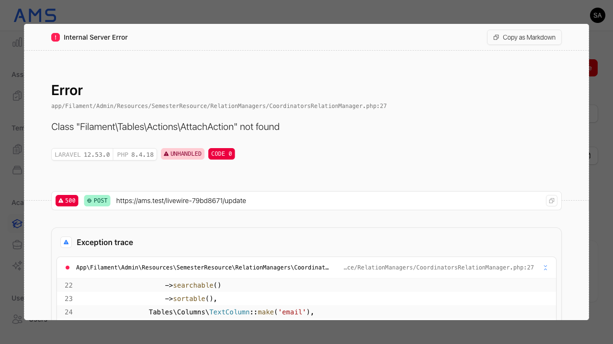
university_id, name, and email columns. This creates entries in the coordinator_semester pivot table.title, course.code, supervisor.name, status (as a color-coded badge), and students_count. Each row links to the ProjectResource for editing. Projects are read-only within this RM (managed from the Projects resource).
| Test ID | Description | Steps | Expected Result | Status |
|---|---|---|---|---|
| ADM-SEM-010 | Edit semester fields | 1. Navigate to /admin/semesters/{id}/edit2. Change name and academic_year 3. Modify start_date and end_date 4. Click "Save changes" |
Semester record updated in database. Success notification displayed. Updated values reflected on page. | |
| ADM-SEM-011 | Attach coordinator to semester | 1. On semester edit page, scroll to Coordinators RM 2. Click "Attach" button 3. Search and select a user with Coordinator role 4. Confirm attachment |
Row inserted into coordinator_semester pivot table with correct user_id and semester_id. Coordinator appears in RM table showing university_id, name, email. |
|
| ADM-SEM-012 | Detach coordinator from semester | 1. In Coordinators RM, click "Detach" on an attached coordinator 2. Confirm detachment |
Row removed from coordinator_semester pivot table. Coordinator no longer appears in the RM table. |
|
| ADM-SEM-013 | Projects RM displays linked projects correctly | 1. Scroll to the Projects RM section 2. Verify columns: title, course.code, supervisor.name, status badge, students_count |
Projects table shows all projects where semester_id matches the current semester. Status badges display with correct colors: gray (setup), warning/yellow (evaluating), green (completed). |
|
| ADM-SEM-014 | Projects RM row links to ProjectResource | 1. Click on a project row in the Projects RM 2. Observe navigation |
User is navigated to the project's edit page in the ProjectResource (/admin/projects/{id}/edit). |
|
| ADM-SEM-015 | Only Coordinator-role users appear in attach modal | 1. Click "Attach" in Coordinators RM 2. Search for a user without Coordinator role |
Non-coordinator users do not appear in the search results. Only users with the Coordinator role are available for attachment. |
| Table | Column | Type | Constraints | Screen Mapping |
|---|---|---|---|---|
| semesters | name | varchar(255) | NOT NULL | Name text input (pre-filled) |
| semesters | academic_year | varchar(9) | NOT NULL | Academic Year text input (pre-filled) |
| semesters | start_date | date | NULL | Start Date DatePicker (pre-filled) |
| semesters | end_date | date | NULL, afterOrEqual start_date | End Date DatePicker (pre-filled) |
| semesters | updated_at | timestamp | NOT NULL | Auto-updated on save |
| coordinator_semester | user_id | bigint | FK (users.id), CASCADE | Coordinators RM attach/detach |
| coordinator_semester | semester_id | bigint | FK (semesters.id), CASCADE | Coordinators RM attach/detach |
| projects | semester_id | bigint | FK (semesters.id) | Projects RM table rows |
| projects | title | varchar | NOT NULL | Projects RM title column |
| projects | status | enum('setup','evaluating','completed') | NOT NULL | Projects RM status badge |
Route: /admin/projects
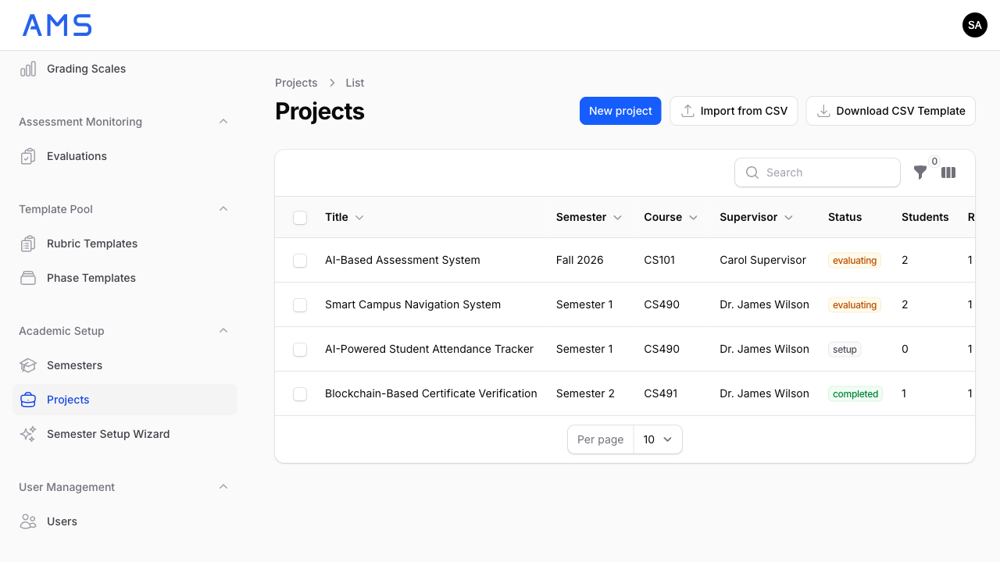
title, semester.name, course.code, specialization.name (toggleable/hidden by default), supervisor.name, status (color-coded badge: gray for setup, warning/yellow for evaluating, green/success for completed), students_count, and reviewers_count. Filters include semester, status, course, and supervisor. A CSV import action is available in the table header for bulk project creation. Coordinator-scoped users see only projects belonging to their assigned semesters. The delete action is hidden unless the project status is setup.
| Test ID | Description | Steps | Expected Result | Status |
|---|---|---|---|---|
| ADM-PRJ-001 | Projects table displays all columns correctly | 1. Navigate to /admin/projects2. Verify columns: title, semester.name, course.code, supervisor.name, status badge, students_count, reviewers_count |
Table renders all columns with correct data. Status badges display with appropriate colors: gray (setup), yellow (evaluating), green (completed). | |
| ADM-PRJ-002 | Filter projects by semester, status, course, and supervisor | 1. Apply each filter individually and verify results 2. Apply multiple filters simultaneously 3. Clear all filters |
Each filter correctly narrows the result set. Combined filters produce the intersection of all criteria. Clearing filters restores the full list. | |
| ADM-PRJ-003 | Delete action hidden unless status is setup | 1. Find a project with status "evaluating" or "completed" 2. Verify delete action is not visible 3. Find a project with status "setup" 4. Verify delete action is visible |
Delete action only appears on rows where status = 'setup'. Projects in "evaluating" or "completed" status cannot be deleted from the list. |
|
| ADM-PRJ-004 | CSV import action for bulk project creation | 1. Click the CSV import action in the table header 2. Upload a valid CSV file with project data 3. Map columns and confirm import |
Projects are created in the projects table from each CSV row. Success notification with import count. Invalid rows are reported as errors. |
|
| ADM-PRJ-005 | Coordinator scoping - coordinators see only their semester's projects | 1. Login as a Coordinator user 2. Navigate to /admin/projects3. Verify only projects from assigned semesters are visible |
Table shows only projects where semester_id belongs to a semester the coordinator is assigned to via coordinator_semester. Admin users see all projects. |
| Table | Column | Type | Constraints | Screen Mapping |
|---|---|---|---|---|
| projects | id | bigint | PRIMARY KEY, AUTO_INCREMENT | Internal row identifier |
| projects | title | varchar | NOT NULL | Title column |
| projects | semester_id | bigint | FK (semesters.id) | Semester Name column (joined) & semester filter |
| projects | course_id | bigint | FK (courses.id) | Course Code column (joined) & course filter |
| projects | specialization_id | bigint | FK (specializations.id) | Specialization Name column (hidden toggle, joined) |
| projects | supervisor_id | bigint | FK (users.id) | Supervisor Name column (joined) & supervisor filter |
| projects | phase_template_id | bigint | FK (phase_templates.id) | Not displayed in list (used internally) |
| projects | previous_phase_project_id | bigint | FK (projects.id), NULL | Not displayed in list (used internally) |
| projects | status | enum('setup','evaluating','completed') | NOT NULL | Status badge column & status filter, controls delete visibility |
| projects | deleted_at | timestamp | NULL | Soft delete - hidden when set |
| project_student | user_id | bigint | FK (users.id), CASCADE | Students Count (aggregated from pivot) |
| project_reviewer | user_id | bigint | FK (users.id), CASCADE | Reviewers Count (aggregated from pivot) |
Route: /admin/projects/create
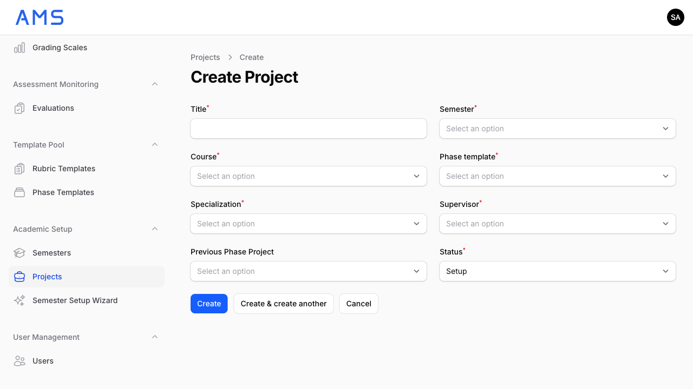
title (required, max 255 characters), semester (required, searchable select from existing semesters), course (required, select displaying "code - title" format), phase_template (required, select from existing phase templates), specialization (required, select from existing specializations), supervisor (required, searchable select filtered to users with the Supervisor role, displaying "name (university_id)"), previous_phase_project (optional, select for linking to a prior phase project), and status (select with options setup/evaluating/completed, defaulting to "setup").
| Test ID | Description | Steps | Expected Result | Status |
|---|---|---|---|---|
| ADM-PRJ-006 | Create project with all required fields | 1. Navigate to /admin/projects/create2. Enter title 3. Select semester, course, phase_template, specialization, supervisor 4. Leave status as default "setup" 5. Click "Create" |
Project is created in projects table with all foreign keys set correctly and status='setup'. Redirect to projects list with success notification. |
|
| ADM-PRJ-007 | Supervisor select shows only Supervisor-role users | 1. Click the supervisor select dropdown 2. Observe the available options 3. Verify format shows "name (university_id)" |
Only users with the Supervisor role appear in the dropdown. Each option displays as "Name (UniversityID)" format. | |
| ADM-PRJ-008 | Course select shows "code - title" format | 1. Click the course select dropdown 2. Observe option labels |
Each course option is displayed in "code - title" format (e.g., "CS101 - Introduction to Computing"). | |
| ADM-PRJ-009 | Required field validation | 1. Leave all required fields empty 2. Click "Create" |
Validation errors displayed for title, semester, course, phase_template, specialization, and supervisor. Project is not created. | |
| ADM-PRJ-010 | Create project with previous phase project link | 1. Fill in all required fields 2. Select a previous_phase_project 3. Click "Create" |
Project is created with previous_phase_project_id set to the selected project's ID. The link is stored correctly in the database. |
| Table | Column | Type | Constraints | Screen Mapping |
|---|---|---|---|---|
| projects | title | varchar(255) | NOT NULL | Title text input |
| projects | semester_id | bigint | FK (semesters.id), NOT NULL | Semester searchable select |
| projects | course_id | bigint | FK (courses.id), NOT NULL | Course select ("code - title") |
| projects | phase_template_id | bigint | FK (phase_templates.id), NOT NULL | Phase Template select |
| projects | specialization_id | bigint | FK (specializations.id), NOT NULL | Specialization select |
| projects | supervisor_id | bigint | FK (users.id), NOT NULL | Supervisor select (Supervisor role, "name (university_id)") |
| projects | previous_phase_project_id | bigint | FK (projects.id), NULL | Previous Phase Project select (optional) |
| projects | status | enum('setup','evaluating','completed') | NOT NULL, DEFAULT 'setup' | Status select dropdown |
| projects | created_at | timestamp | NOT NULL | Auto-set on creation |
Route: /admin/projects/{id}/edit
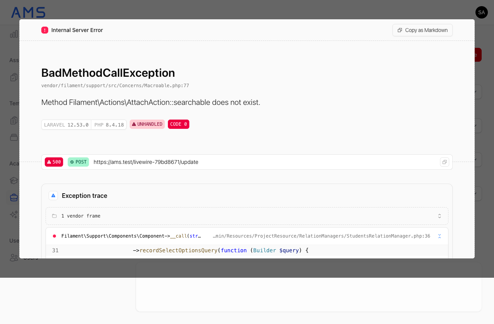
university_id, name, and email columns.university_id, name, and email columns.project_student and project_reviewer).
| Test ID | Description | Steps | Expected Result | Status |
|---|---|---|---|---|
| ADM-PRJ-011 | Edit project fields | 1. Navigate to /admin/projects/{id}/edit2. Change title, supervisor, and status 3. Click "Save changes" |
Project record updated in database. Success notification displayed. Updated values reflected on page. | |
| ADM-PRJ-012 | Attach student to project (max 4 enforced) | 1. In Students RM, click "Attach" 2. Search and select a Student-role user 3. Confirm attachment 4. Repeat until 4 students are attached 5. Attempt to attach a 5th student |
First 4 attachments succeed, creating rows in project_student. The 5th attachment is blocked with an error indicating the maximum of 4 students has been reached. |
|
| ADM-PRJ-013 | Student cannot be in another project in same semester | 1. Attach a student who is already assigned to another project in the same semester 2. Confirm attachment |
Attachment is blocked with a validation error indicating the student is already assigned to a project in this semester. No row is created in project_student. |
|
| ADM-PRJ-014 | Supervisor cannot be attached as reviewer | 1. In Reviewers RM, click "Attach" 2. Search for the project's supervisor 3. Attempt to attach |
The supervisor does not appear in the available reviewers list, or attachment is blocked with a validation error. The supervisor-reviewer conflict is prevented. | |
| ADM-PRJ-015 | Detach student from project | 1. In Students RM, click "Detach" on an attached student 2. Confirm detachment |
Row removed from project_student pivot table. Student no longer appears in the RM table. Student is now free to be attached to another project in the same semester. |
|
| ADM-PRJ-016 | Detach reviewer from project | 1. In Reviewers RM, click "Detach" on an attached reviewer 2. Confirm detachment |
Row removed from project_reviewer pivot table. Reviewer no longer appears in the RM table. |
| Table | Column | Type | Constraints | Screen Mapping |
|---|---|---|---|---|
| projects | title | varchar(255) | NOT NULL | Title text input (pre-filled) |
| projects | semester_id | bigint | FK (semesters.id), NOT NULL | Semester select (pre-selected) |
| projects | supervisor_id | bigint | FK (users.id), NOT NULL | Supervisor select (pre-selected), used for reviewer conflict check |
| projects | status | enum('setup','evaluating','completed') | NOT NULL | Status select (pre-selected) |
| projects | updated_at | timestamp | NOT NULL | Auto-updated on save |
| project_student | project_id | bigint | FK (projects.id), CASCADE | Students RM attach/detach |
| project_student | user_id | bigint | FK (users.id), CASCADE | Students RM attach/detach (max 4, unique per semester) |
| project_reviewer | project_id | bigint | FK (projects.id), CASCADE | Reviewers RM attach/detach |
| project_reviewer | user_id | bigint | FK (users.id), CASCADE | Reviewers RM attach/detach (supervisor excluded) |
Route: /admin/rubric-templates
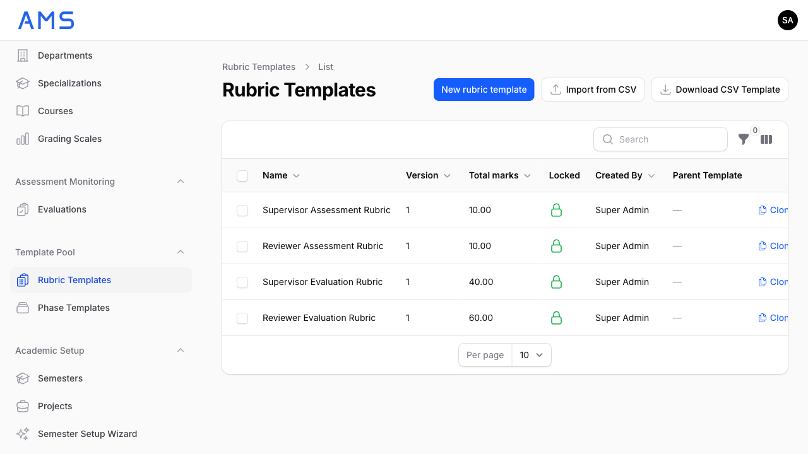
name, version, total_marks (formatted to 2 decimal places), is_locked (rendered with a lock icon), creator.name (the user who created the template), and parentTemplate.name (the name of the original template if this is a clone). Filters include a TernaryFilter for locked status and a SelectFilter for creator. Row actions include edit (hidden when locked), clone (duplicates the template with version incremented by 1), lock (with confirmation modal, makes the template read-only), and delete (hidden when locked). A CSV import action is available in the table header.
| Test ID | Description | Steps | Expected Result | Status |
|---|---|---|---|---|
| ADM-RBR-001 | Rubric templates table displays all columns correctly | 1. Navigate to /admin/rubric-templates2. Verify columns: name, version, total_marks, is_locked (lock icon), creator.name, parentTemplate.name |
Table renders all columns with correct data. Total marks displayed with 2 decimal places. Lock icon visible for locked templates. Parent template name shows for cloned templates. | |
| ADM-RBR-002 | Clone rubric template action | 1. Click the "clone" action on a rubric template row 2. Observe the result |
A new rubric template is created with the same name, all criteria and score levels duplicated, version incremented by 1, parent_template_id set to the original, is_locked=false, and created_by set to current user. |
|
| ADM-RBR-003 | Lock rubric template action with confirmation | 1. Find an unlocked rubric template 2. Click the "lock" action 3. Confirm in the modal dialog |
Template's is_locked is set to true in the database. Lock icon appears. Edit and delete actions become hidden for this row. |
|
| ADM-RBR-004 | Edit and delete actions hidden when template is locked | 1. Find a locked rubric template (is_locked = true) 2. Verify that edit and delete actions are not visible 3. Verify clone action is still available |
Edit and delete actions are hidden. Clone action remains available, allowing duplication of locked templates for new versions. | |
| ADM-RBR-005 | Filter by locked status and creator | 1. Use TernaryFilter to show only locked templates 2. Use SelectFilter to filter by a specific creator 3. Apply both filters simultaneously |
Filters correctly narrow the result set. Combined filters show only templates matching both criteria. |
| Table | Column | Type | Constraints | Screen Mapping |
|---|---|---|---|---|
| rubric_templates | id | bigint | PRIMARY KEY, AUTO_INCREMENT | Internal row identifier |
| rubric_templates | name | varchar | NOT NULL | Name column |
| rubric_templates | version | int | NOT NULL, DEFAULT 1 | Version column (incremented on clone) |
| rubric_templates | parent_template_id | bigint | FK (rubric_templates.id), NULL | Parent Template Name column (self-referential join) |
| rubric_templates | total_marks | decimal(8,2) | NOT NULL, DEFAULT 0 | Total Marks column (2 decimal places) |
| rubric_templates | is_locked | boolean | NOT NULL, DEFAULT false | Lock icon column & TernaryFilter, controls action visibility |
| rubric_templates | created_by | bigint | FK (users.id) | Creator Name column (joined) & SelectFilter |
| rubric_templates | deleted_at | timestamp | NULL | Soft delete - hidden when set |
Route: /admin/rubric-templates/create
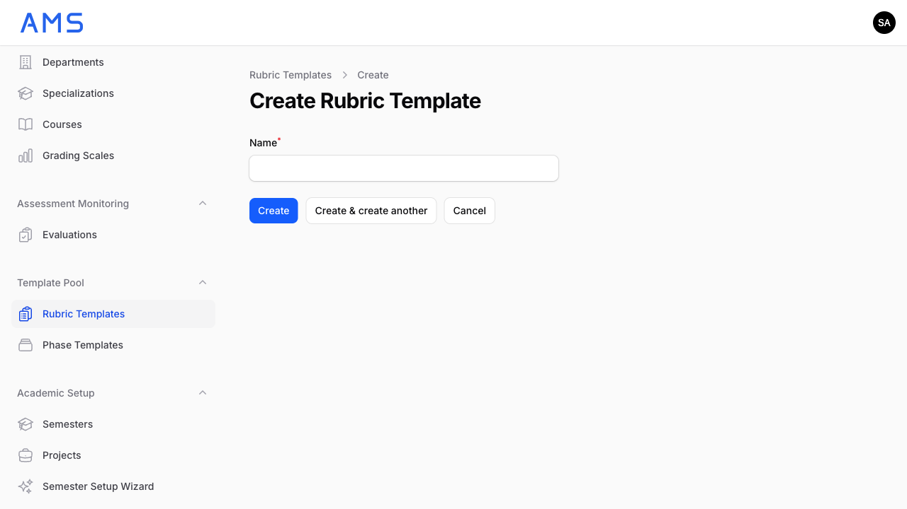
name field (required, max 255 characters). Upon creation, the system automatically sets version=1 and created_by to the authenticated user's ID. The total_marks defaults to 0 and is_locked defaults to false. After creation, the user is redirected to the edit page where criteria and score levels can be added via the Relation Manager.
| Test ID | Description | Steps | Expected Result | Status |
|---|---|---|---|---|
| ADM-RBR-006 | Create rubric template with valid name | 1. Navigate to /admin/rubric-templates/create2. Enter a template name 3. Click "Create" |
Rubric template created in rubric_templates table with version=1, created_by set to current user, total_marks=0, is_locked=false. Redirect to edit page with success notification. |
|
| ADM-RBR-007 | Required name validation | 1. Leave name field empty 2. Submit form |
Validation error: "The name field is required." Template is not created. | |
| ADM-RBR-008 | Name max length validation | 1. Enter a name exceeding 255 characters 2. Submit form |
Validation error: "The name must not be greater than 255 characters." Template is not created. |
| Table | Column | Type | Constraints | Screen Mapping |
|---|---|---|---|---|
| rubric_templates | name | varchar(255) | NOT NULL | Name text input |
| rubric_templates | version | int | NOT NULL, DEFAULT 1 | Auto-set to 1 on creation |
| rubric_templates | created_by | bigint | FK (users.id), NOT NULL | Auto-set to authenticated user's ID |
| rubric_templates | total_marks | decimal(8,2) | NOT NULL, DEFAULT 0 | Auto-set to 0 on creation |
| rubric_templates | is_locked | boolean | NOT NULL, DEFAULT false | Auto-set to false on creation |
| rubric_templates | created_at | timestamp | NOT NULL | Auto-set on creation |
Route: /admin/rubric-templates/{id}/edit
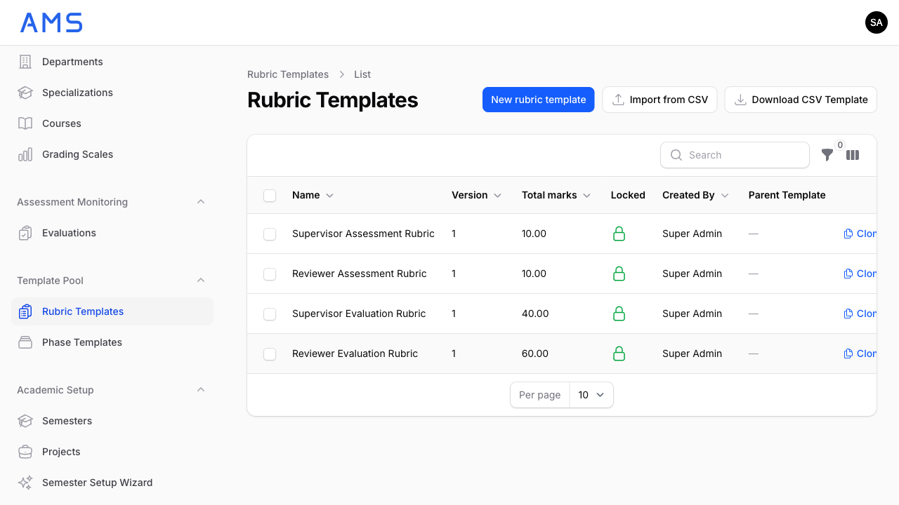
name field plus read-only placeholders for total_marks (sum of all criteria max_score values) and version. Header actions include Clone (duplicate with version++), Lock (make read-only with confirmation), and Delete.title (required, max 255 characters), description (optional textarea), max_score (numeric, minimum 0), and is_individual (toggle for individual vs. group assessment). Within each criterion, an embedded ScoreLevels repeater allows defining the scoring rubric levels with: label (max 255 characters, e.g., "Excellent", "Good"), score_value (numeric, minimum 0), and description (optional textarea describing the level). Criteria are orderable, reorderable, and collapsible within the RM. All editing capabilities are disabled when the template's is_locked=true, making the entire page read-only except for the Clone action.
| Test ID | Description | Steps | Expected Result | Status |
|---|---|---|---|---|
| ADM-RBR-009 | Edit rubric template name | 1. Navigate to /admin/rubric-templates/{id}/edit2. Change the template name 3. Click "Save changes" |
Template name updated in database. Success notification displayed. Total marks and version fields remain read-only. | |
| ADM-RBR-010 | Create criterion with score levels | 1. In Criteria RM, click "Create" 2. Enter title, description, max_score, toggle is_individual 3. Add score levels using the repeater: label, score_value, description 4. Save the criterion |
Criterion created in criteria table with correct rubric_template_id. Score levels created in score_levels table with correct criterion_id and auto-assigned sort_order. Template's total_marks is recalculated. |
|
| ADM-RBR-011 | Reorder criteria | 1. In Criteria RM with multiple criteria 2. Drag to reorder criteria or use reorder controls 3. Save new order |
Criteria display order is updated. Sort positions are persisted in the database. | |
| ADM-RBR-012 | All editing disabled when template is locked | 1. Navigate to a locked template's edit page (is_locked=true)2. Attempt to edit the name field 3. Attempt to create/edit/delete criteria 4. Attempt to modify score levels |
All form fields are disabled/read-only. Create, edit, delete actions in Criteria RM are hidden or disabled. Score level repeater is non-editable. Only Clone header action remains functional. | |
| ADM-RBR-013 | Total marks recalculates on criteria changes | 1. Add a criterion with max_score of 25 2. Add another with max_score of 15 3. Verify total_marks shows 40.00 4. Delete the second criterion 5. Verify total_marks shows 25.00 |
The total_marks placeholder updates to reflect the sum of all criteria max_score values after each save operation. |
|
| ADM-RBR-014 | Clone action from edit page | 1. Click "Clone" header action on a rubric template 2. Observe the result |
A new rubric template is created with all criteria and score levels duplicated, version incremented, parent_template_id set, is_locked=false. User is redirected to the new clone's edit page. |
|
| ADM-RBR-015 | Delete criterion and its score levels | 1. In Criteria RM, click delete on an existing criterion 2. Confirm deletion |
Criterion is soft-deleted from criteria table. Associated score levels are cascade soft-deleted from score_levels table. Template's total_marks is recalculated. |
| Table | Column | Type | Constraints | Screen Mapping |
|---|---|---|---|---|
| rubric_templates | name | varchar(255) | NOT NULL | Name text input (pre-filled) |
| rubric_templates | total_marks | decimal(8,2) | NOT NULL, DEFAULT 0 | Read-only total marks placeholder (sum of criteria max_score) |
| rubric_templates | version | int | NOT NULL, DEFAULT 1 | Read-only version placeholder |
| rubric_templates | is_locked | boolean | NOT NULL, DEFAULT false | Controls editability of entire page |
| rubric_templates | updated_at | timestamp | NOT NULL | Auto-updated on save |
| criteria | id | bigint | PRIMARY KEY, AUTO_INCREMENT | Criteria RM row identifier |
| criteria | rubric_template_id | bigint | FK (rubric_templates.id), CASCADE | Auto-set to current template |
| criteria | title | varchar(255) | NOT NULL | Criteria RM title field |
| criteria | description | text | NULL | Criteria RM description textarea |
| criteria | max_score | decimal(8,2) | NOT NULL, min 0 | Criteria RM max_score numeric input |
| criteria | is_individual | boolean | NOT NULL | Criteria RM is_individual toggle |
| criteria | deleted_at | timestamp | NULL | Criteria RM delete action (soft delete) |
| score_levels | id | bigint | PRIMARY KEY, AUTO_INCREMENT | Score level repeater row identifier |
| score_levels | criterion_id | bigint | FK (criteria.id), CASCADE | Auto-set to parent criterion |
| score_levels | label | varchar(255) | NOT NULL | Score level label field (e.g., "Excellent") |
| score_levels | score_value | decimal(8,2) | NOT NULL, min 0 | Score level score_value numeric input |
| score_levels | description | text | NULL | Score level description textarea |
| score_levels | sort_order | int | NOT NULL | Score level ordering within criterion |
| score_levels | deleted_at | timestamp | NULL | Cascade soft delete with parent criterion |
Route: /admin/phase-templates
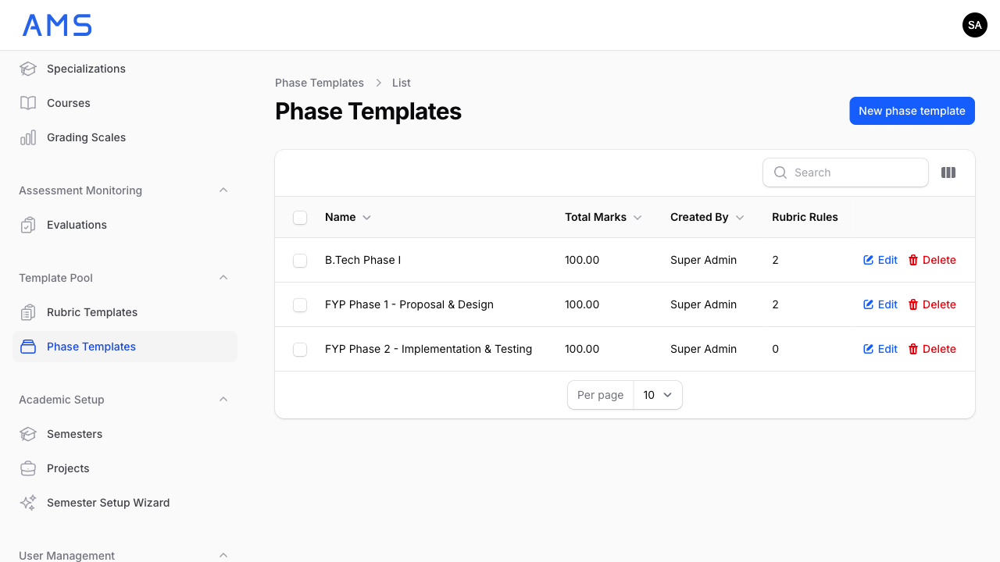
name, total_phase_marks (formatted to 2 decimal places, representing the sum of all linked rubric rule marks), creator.name (the user who created the template), phase_rubric_rules_count (the number of rubric rules associated with this phase), and created_at. The table supports search, pagination, and row-level edit/delete actions.
| Test ID | Description | Steps | Expected Result | Status |
|---|---|---|---|---|
| ADM-PHS-001 | Phase templates table displays all columns correctly | 1. Navigate to /admin/phase-templates2. Verify columns: name, total_phase_marks, creator.name, phase_rubric_rules_count, created_at |
Table renders all columns with correct data. Total phase marks displayed with 2 decimal places. Rubric rules count matches the number of linked rules in the database. | |
| ADM-PHS-002 | Phase rubric rules count is accurate | 1. Pick a phase template row 2. Count its phase_rubric_rules in the database 3. Compare with the displayed count |
Displayed count matches SELECT COUNT(*) FROM phase_rubric_rules WHERE phase_template_id = ?. |
|
| ADM-PHS-003 | Delete phase template | 1. Click delete action on a phase template row 2. Confirm deletion |
Phase template is soft-deleted (deleted_at set). Removed from list view. Associated phase_rubric_rules are handled per cascade rules. |
| Table | Column | Type | Constraints | Screen Mapping |
|---|---|---|---|---|
| phase_templates | id | bigint | PRIMARY KEY, AUTO_INCREMENT | Internal row identifier |
| phase_templates | name | varchar | NOT NULL | Name column |
| phase_templates | total_phase_marks | decimal(8,2) | NOT NULL | Total Phase Marks column (2 decimal places) |
| phase_templates | created_by | bigint | FK (users.id) | Creator Name column (joined) |
| phase_templates | created_at | timestamp | NOT NULL | Created At column |
| phase_templates | deleted_at | timestamp | NULL | Soft delete - hidden when set |
| phase_rubric_rules | phase_template_id | bigint | FK (phase_templates.id) | Phase Rubric Rules Count (aggregated) |
Route: /admin/phase-templates/create
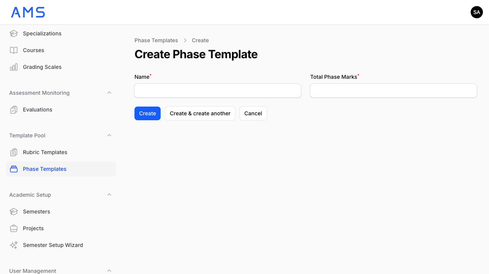
name (required, max 255 characters) and total_phase_marks (required, numeric, minimum 0). Upon creation, the system automatically sets the created_by field to the currently authenticated user's ID. This links the phase template to its creator for auditing and ownership tracking purposes.
| Test ID | Description | Steps | Expected Result | Status |
|---|---|---|---|---|
| ADM-PHS-004 | Create phase template with valid data | 1. Navigate to /admin/phase-templates/create2. Enter a unique name 3. Enter a valid total_phase_marks value (e.g., 100) 4. Click "Create" |
Phase template created in phase_templates table with created_by set to the authenticated user's ID. Redirect to list with success notification. |
|
| ADM-PHS-005 | Name field is required | 1. Leave the name field empty 2. Enter a valid total_phase_marks 3. Submit form |
Validation error: "The name field is required." Phase template is not created. | |
| ADM-PHS-006 | Name max length validation | 1. Enter a name exceeding 255 characters 2. Enter a valid total_phase_marks 3. Submit form |
Validation error: "The name must not be greater than 255 characters." | |
| ADM-PHS-007 | Total phase marks must be numeric and non-negative | 1. Enter a valid name 2. Enter a negative value (e.g., -10) or non-numeric text in total_phase_marks 3. Submit form |
Validation error: "The total phase marks must be at least 0" or "The total phase marks must be a number." Phase template is not created. |
| Table | Column | Type | Constraints | Screen Mapping |
|---|---|---|---|---|
| phase_templates | id | bigint | PRIMARY KEY, AUTO_INCREMENT | Internal row identifier |
| phase_templates | name | varchar(255) | NOT NULL | Name text input |
| phase_templates | total_phase_marks | decimal | NOT NULL, min 0 | Total Phase Marks numeric input |
| phase_templates | created_by | bigint | FK (users.id), NOT NULL | Auto-set to authenticated user ID |
| phase_templates | created_at | timestamp | NOT NULL | Auto-set on creation |
| phase_templates | updated_at | timestamp | NOT NULL | Auto-set on creation |
Route: /admin/phase-templates/{id}/edit
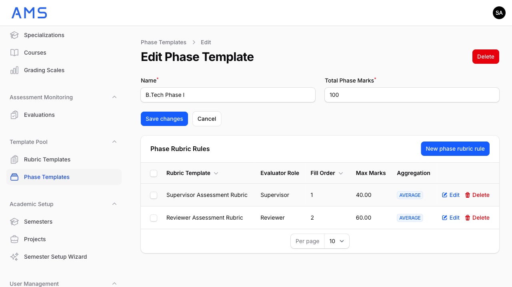
name and total_phase_marks fields. Pre-populated with the current values, the form also includes a PhaseRubricRules Relation Manager (RM) for managing the rubric rules associated with this phase template. Each rule in the RM defines how a specific rubric template contributes to the phase evaluation. RM fields include: rubric_template (select, restricted to locked templates only, searchable), evaluator_role (select: Supervisor or Reviewer), fill_order (integer, minimum 1 -- determines the sequence of evaluation), max_marks (numeric, minimum 0), and aggregation_method (select: AVERAGE, WEIGHTED_AVERAGE, SUM, or MAX; defaults to AVERAGE). The RM table is sorted by fill_order by default to reflect the evaluation sequence.
| Test ID | Description | Steps | Expected Result | Status |
|---|---|---|---|---|
| ADM-PHS-008 | Edit phase template name and total marks | 1. Navigate to /admin/phase-templates/{id}/edit2. Change the name and total_phase_marks 3. Click "Save changes" |
Phase template updated in database. updated_at timestamp refreshed. Success notification displayed. |
|
| ADM-PHS-009 | Create phase rubric rule via Relation Manager | 1. On phase template edit page, scroll to PhaseRubricRules RM 2. Click "Create" 3. Select a locked rubric template 4. Set evaluator_role to "Supervisor" 5. Enter fill_order (e.g., 1) and max_marks (e.g., 40) 6. Select aggregation_method (e.g., AVERAGE) 7. Save |
New row created in phase_rubric_rules table with correct phase_template_id FK. Rule appears in RM table sorted by fill_order. |
|
| ADM-PHS-010 | Rubric template select only shows locked templates | 1. Click "Create" in PhaseRubricRules RM 2. Open the rubric_template select dropdown 3. Verify listed options |
Only rubric templates with is_locked = true appear in the dropdown. Unlocked (draft) templates are excluded. |
|
| ADM-PHS-011 | Fill order validation (minimum 1) | 1. Create a new phase rubric rule 2. Enter fill_order as 0 or a negative number 3. Submit |
Validation error: "The fill order must be at least 1." Rule is not created. | |
| ADM-PHS-012 | Edit existing phase rubric rule | 1. Click edit on an existing rule row in the RM 2. Change evaluator_role from Supervisor to Reviewer 3. Update max_marks 4. Save |
Rule updated in phase_rubric_rules table. RM table refreshes to show updated values. |
|
| ADM-PHS-013 | Delete phase rubric rule via Relation Manager | 1. Click delete on a rule row in the RM 2. Confirm deletion |
Rule is soft-deleted (deleted_at set) in phase_rubric_rules table. Removed from RM table display. |
| Table | Column | Type | Constraints | Screen Mapping |
|---|---|---|---|---|
| phase_templates | name | varchar(255) | NOT NULL | Name text input (pre-filled) |
| phase_templates | total_phase_marks | decimal | NOT NULL, min 0 | Total Phase Marks numeric input (pre-filled) |
| phase_templates | updated_at | timestamp | NOT NULL | Auto-updated on save |
| phase_rubric_rules | id | bigint | PRIMARY KEY, AUTO_INCREMENT | RM table rows |
| phase_rubric_rules | phase_template_id | bigint | FK (phase_templates.id), CASCADE | Auto-set to current phase template |
| phase_rubric_rules | rubric_template_id | bigint | FK (rubric_templates.id), CASCADE | Rubric Template select (locked only, searchable) |
| phase_rubric_rules | evaluator_role | varchar | NOT NULL | Evaluator Role select (Supervisor/Reviewer) |
| phase_rubric_rules | fill_order | int | NOT NULL, min 1 | Fill Order integer input (default sort column) |
| phase_rubric_rules | max_marks | decimal(8,2) | NOT NULL, min 0 | Max Marks numeric input |
| phase_rubric_rules | aggregation_method | enum('AVERAGE','WEIGHTED_AVERAGE','SUM','MAX') | NOT NULL, default AVERAGE | Aggregation Method select |
| phase_rubric_rules | created_at | timestamp | NOT NULL | Auto-set on creation |
| phase_rubric_rules | updated_at | timestamp | NOT NULL | Auto-updated on save |
| phase_rubric_rules | deleted_at | timestamp | NULL | RM delete action (soft delete) |
Route: /admin/evaluations
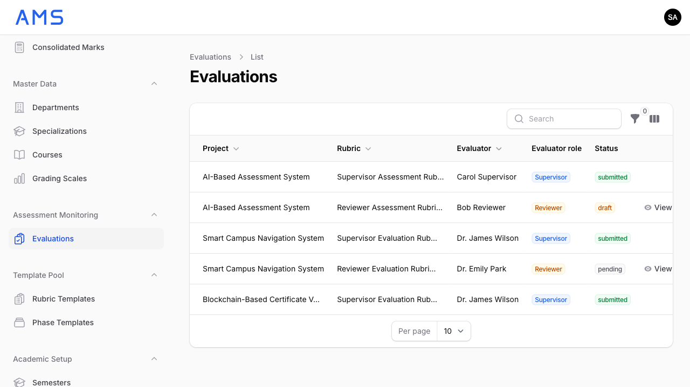
project.title (searchable, limited to 30 characters), rubricTemplate.name (limited to 25 characters), evaluator.name (searchable), evaluator_role as a color-coded badge (Supervisor=info/blue, Reviewer=warning/yellow), status as a badge (pending=gray, draft=warning/yellow, submitted=success/green), onBehalfOfUser.name (toggleable, hidden by default), and unlockedByUser.name (toggleable, hidden by default).| Test ID | Description | Steps | Expected Result | Status |
|---|---|---|---|---|
| ADM-EVL-001 | Evaluations table displays all columns with correct badges | 1. Navigate to /admin/evaluations2. Verify columns: project title, rubric template name, evaluator name, evaluator_role badge, status badge 3. Check badge colors match specifications |
Table renders with all specified columns. Supervisor badges are blue (info), Reviewer badges are yellow (warning). Status badges: pending=gray, draft=yellow, submitted=green. | |
| ADM-EVL-002 | Coordinator scoping restricts visible evaluations | 1. Login as a coordinator assigned to Semester A only 2. Navigate to /admin/evaluations3. Verify no evaluations from Semester B appear |
Only evaluations belonging to projects in the coordinator's assigned semesters are visible. Evaluations from other semesters are hidden. | |
| ADM-EVL-003 | Unlock action resets submitted evaluation | 1. Find an evaluation with status "submitted" 2. Click the "Unlock" action 3. Confirm the action |
Evaluation status is reset to "pending". Associated consolidated marks are cleared. Notification is sent to the evaluator. unlocked_by field is set to the current admin user's ID. |
|
| ADM-EVL-004 | Unlock action is hidden for non-submitted evaluations | 1. Find evaluations with status "pending" or "draft" 2. Check available actions on those rows |
The "Unlock" action button is not visible for pending or draft evaluations. Only "View" and "Proxy Mark Entry" are shown. | |
| ADM-EVL-005 | Proxy mark entry action links to proxy form | 1. Find an evaluation with status "pending" or "draft" 2. Click the "Proxy Mark Entry" action |
User is redirected to the proxy evaluation form. The form is pre-populated with the evaluation context (project, rubric template, evaluator). on_behalf_of_user_id will be set when form is submitted. |
|
| ADM-EVL-006 | Filter evaluations by semester, status, and evaluator role | 1. Apply the semester filter and select a specific semester 2. Apply the status filter and select "submitted" 3. Apply the evaluator_role filter and select "Supervisor" 4. Observe filtered results |
Table shows only evaluations matching all three filter criteria simultaneously. Counts update accordingly. |
| Table | Column | Type | Constraints | Screen Mapping |
|---|---|---|---|---|
| evaluations | id | bigint | PRIMARY KEY, AUTO_INCREMENT | Internal row identifier |
| evaluations | project_id | bigint | FK (projects.id), NOT NULL | Project Title column (joined via project.title) |
| evaluations | rubric_template_id | bigint | FK (rubric_templates.id), NOT NULL | Rubric Template Name column (joined) |
| evaluations | evaluator_id | bigint | FK (users.id), NOT NULL | Evaluator Name column (joined via evaluator.name) |
| evaluations | evaluator_role | varchar | NOT NULL | Evaluator Role badge column |
| evaluations | fill_order | int | NULL | Evaluation sequence order |
| evaluations | on_behalf_of_user_id | bigint | FK (users.id), NULL | On Behalf Of column (toggleable, hidden by default) |
| evaluations | evidence_attachment_path | varchar | NULL | Evidence file path (internal) |
| evaluations | status | enum('pending','draft','submitted') | NOT NULL | Status badge column |
| evaluations | general_feedback | text | NULL | General feedback (visible in view) |
| evaluations | unlocked_by | bigint | FK (users.id), NULL | Unlocked By column (toggleable, hidden by default) |
| evaluations | created_at | timestamp | NOT NULL | Auto-set on creation |
| evaluations | deleted_at | timestamp | NULL | Soft delete - hidden when set |
| evaluations | (project_id, rubric_template_id, evaluator_id) | -- | UNIQUE composite index | Prevents duplicate evaluations per project/rubric/evaluator |
Route: /admin/evaluations/{id}
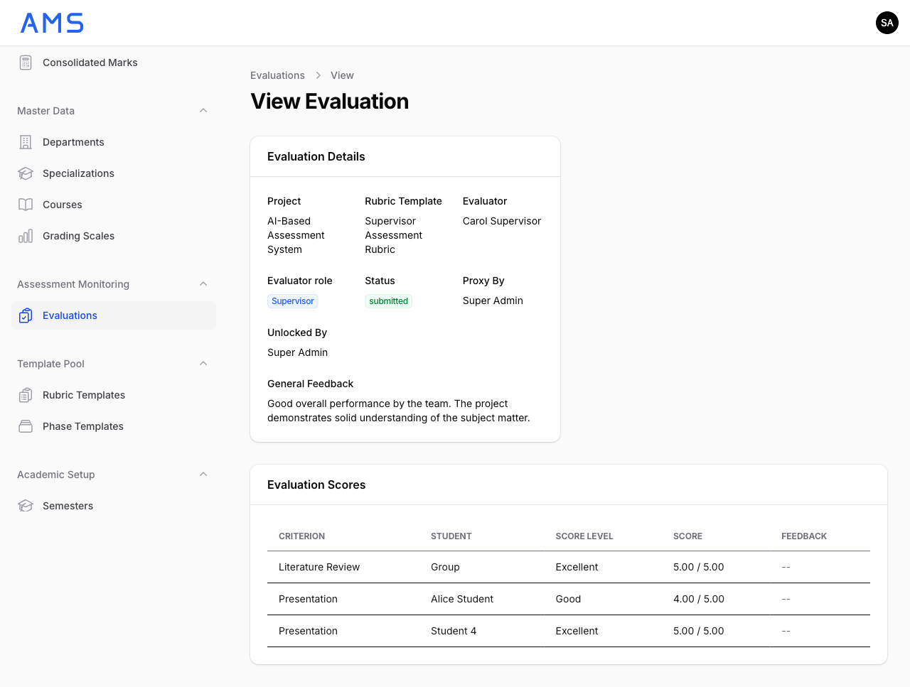
project.title, rubricTemplate.name, evaluator.name, evaluator_role (displayed as a color-coded badge), status (displayed as a color-coded badge), onBehalfOfUser.name (if proxy entry was used), unlockedByUser.name (if the evaluation was previously unlocked), and general_feedback.criterion name (from the rubric), the selected score level description, the score_awarded value, and any per-criterion feedback provided by the evaluator.
| Test ID | Description | Steps | Expected Result | Status |
|---|---|---|---|---|
| ADM-EVL-007 | View evaluation details render correctly | 1. Navigate to /admin/evaluations/{id} for a submitted evaluation2. Verify all infolist fields are displayed |
All evaluation fields render: project title, rubric template name, evaluator name, evaluator_role badge, status badge, on_behalf_of user (if set), unlocked_by user (if set), and general_feedback. | |
| ADM-EVL-008 | Evaluation scores table displays per-student scores | 1. View a submitted evaluation that has scores recorded 2. Scroll to the evaluation scores section 3. Verify score data for each student |
Scores table shows each criterion with its score level, score_awarded, and feedback. Each student's scores are displayed in separate sections or rows. Values match the evaluation_scores table. |
|
| ADM-EVL-009 | View evaluation with no scores (pending status) | 1. Navigate to the view page of a pending evaluation 2. Check the scores section |
Evaluation details are shown but the scores section displays an empty state or "No scores recorded" message since the evaluator has not yet submitted scores. | |
| ADM-EVL-010 | View evaluation with proxy entry details | 1. View an evaluation where on_behalf_of_user_id is set2. Verify the on-behalf-of information |
The "On Behalf Of" field displays the name of the user who performed the proxy entry. This confirms the evaluation was filled by a coordinator on behalf of the original evaluator. |
| Table | Column | Type | Constraints | Screen Mapping |
|---|---|---|---|---|
| evaluations | id | bigint | PRIMARY KEY | Record identifier for view route |
| evaluations | project_id | bigint | FK (projects.id) | Project Title infolist entry |
| evaluations | rubric_template_id | bigint | FK (rubric_templates.id) | Rubric Template Name infolist entry |
| evaluations | evaluator_id | bigint | FK (users.id) | Evaluator Name infolist entry |
| evaluations | evaluator_role | varchar | NOT NULL | Evaluator Role badge |
| evaluations | status | enum('pending','draft','submitted') | NOT NULL | Status badge |
| evaluations | on_behalf_of_user_id | bigint | FK (users.id), NULL | On Behalf Of infolist entry |
| evaluations | unlocked_by | bigint | FK (users.id), NULL | Unlocked By infolist entry |
| evaluations | general_feedback | text | NULL | General Feedback infolist entry |
| evaluation_scores | evaluation_id | bigint | FK (evaluations.id), CASCADE | Links scores to this evaluation |
| evaluation_scores | criterion_id | bigint | FK (criteria.id), CASCADE | Criterion name in scores table |
| evaluation_scores | score_level_id | bigint | FK (score_levels.id), NULL | Score Level description in scores table |
| evaluation_scores | student_id | bigint | FK (users.id), NULL | Student grouping in scores view |
| evaluation_scores | score_awarded | decimal(8,2) | NOT NULL | Score Awarded column in scores table |
| evaluation_scores | feedback | text | NULL | Feedback column in scores table |
Route: /admin/consolidated-marks
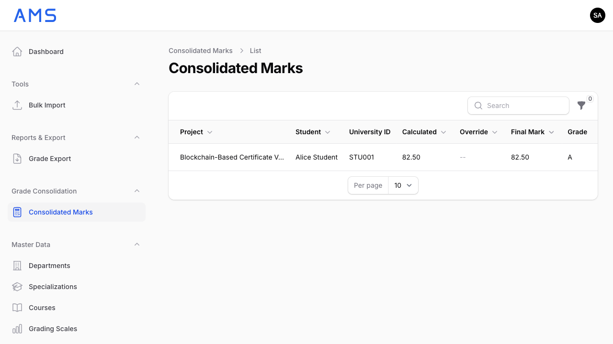
project.title (searchable, limited to 30 characters), student.name (searchable), student.university_id (searchable), total_calculated_score, override_score (displays "--" placeholder when null), final_mark (custom computed column showing override_score when set, otherwise total_calculated_score, using COALESCE for database-level sorting), and letter_grade (custom computed from the grading_scales table by matching the final mark against the min/max score ranges).override_score numeric field and an override_reason textarea to justify the override).| Test ID | Description | Steps | Expected Result | Status |
|---|---|---|---|---|
| ADM-CON-001 | Consolidated marks table displays all columns correctly | 1. Navigate to /admin/consolidated-marks2. Verify columns: project title, student name, university_id, total_calculated_score, override_score, final_mark, letter_grade |
Table renders all columns with correct data. Override score shows "--" for rows without overrides. Final mark shows override when set, otherwise calculated score. Letter grade is derived from grading scales. | |
| ADM-CON-002 | Final mark uses COALESCE logic for sorting | 1. Click the final_mark column header to sort 2. Verify sort order considers override_score first |
Sorting uses COALESCE(override_score, total_calculated_score). Records with overrides sort by their override value, and records without overrides sort by their calculated score, all in a single consistent ordering. |
|
| ADM-CON-003 | Override mark action with valid data | 1. Find a consolidated mark in an active (non-closed) semester 2. Click "Override Mark" action 3. Enter an override_score (e.g., 85.50) 4. Enter an override_reason (e.g., "Adjusted for extenuating circumstances") 5. Submit |
override_score and override_reason are saved to the consolidated_marks record. The final_mark and letter_grade columns update to reflect the override. |
|
| ADM-CON-004 | Override mark action is hidden when semester is closed | 1. Ensure a semester has status "closed" 2. Navigate to consolidated marks for that semester 3. Check available actions |
The "Override Mark" action is not visible for any consolidated marks in the closed semester. Only the "View" action is available. | |
| ADM-CON-005 | Letter grade computation from grading scales | 1. Verify a student's final_mark value (e.g., 87.5) 2. Check the grading_scales table for the matching range3. Compare the displayed letter_grade |
The displayed letter_grade matches the grade from grading_scales where min_score <= final_mark AND max_score >= final_mark. For example, 87.5 might map to "B+" per the scale configuration. |
| Table | Column | Type | Constraints | Screen Mapping |
|---|---|---|---|---|
| consolidated_marks | id | bigint | PRIMARY KEY, AUTO_INCREMENT | Internal row identifier |
| consolidated_marks | project_id | bigint | FK (projects.id), CASCADE | Project Title column (joined via project.title) |
| consolidated_marks | phase_template_id | bigint | FK (phase_templates.id), CASCADE | Phase context for consolidation |
| consolidated_marks | student_id | bigint | FK (users.id), CASCADE | Student Name and University ID columns (joined) |
| consolidated_marks | total_calculated_score | decimal(8,2) | NOT NULL | Total Calculated Score column |
| consolidated_marks | override_score | decimal(8,2) | NULL | Override Score column (shows "--" when NULL) |
| consolidated_marks | override_reason | text | NULL | Override Mark action textarea |
| consolidated_marks | created_at | timestamp | NOT NULL | Auto-set on creation |
| consolidated_marks | deleted_at | timestamp | NULL | Soft delete - hidden when set |
| grading_scales | letter_grade | varchar(10) | NOT NULL | Letter Grade computed column |
| grading_scales | min_score | decimal(5,2) | NOT NULL | Lower bound for grade matching |
| grading_scales | max_score | decimal(5,2) | NOT NULL | Upper bound for grade matching |
Route: /admin/consolidated-marks/{id}
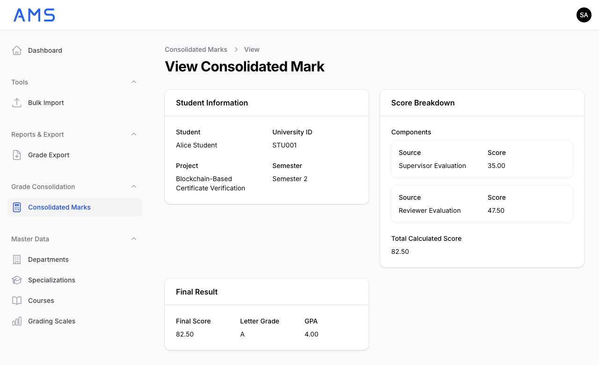
student.name, student.university_id, project.title, and project.semester.name.source_label (describing the evaluation source, e.g., "Supervisor - Proposal Rubric") and score. Below the components, the total_calculated_score is displayed as a summary.override_score is set. It shows the override_score value and the override_reason text explaining the justification for the override.final_score_display (override_score if set, otherwise total_calculated_score), the letter_grade_display (looked up from grading_scales based on the final score), and the gpa_display (the corresponding gpa_equivalent from the matched grading scale entry).
| Test ID | Description | Steps | Expected Result | Status |
|---|---|---|---|---|
| ADM-CON-006 | Student info section displays correct data | 1. Navigate to /admin/consolidated-marks/{id}2. Verify the Student Info section |
Displays the correct student name, university ID, project title, and semester name matching the database records via the joined relationships. | |
| ADM-CON-007 | Score breakdown lists all contributing components | 1. View a consolidated mark record 2. Check the Score Breakdown section 3. Compare with consolidated_mark_components table |
RepeatableEntry shows all component rows matching SELECT source_label, score FROM consolidated_mark_components WHERE consolidated_mark_id = ?. The total_calculated_score is shown as a summary below the components. |
|
| ADM-CON-008 | Override section is hidden when no override is set | 1. View a consolidated mark where override_score is NULL2. Check for the Override section |
The Override section is not rendered. Only Student Info, Score Breakdown, and Final Result sections are visible. | |
| ADM-CON-009 | Override section displays when override is set | 1. View a consolidated mark where override_score is set2. Check the Override section |
The Override section is visible, showing the override_score value and the override_reason text. The Final Result section uses the override_score instead of the calculated score. | |
| ADM-CON-010 | Final result section shows correct grade and GPA | 1. View a consolidated mark 2. Note the final_score_display value 3. Look up the corresponding grading_scale entry 4. Compare letter_grade_display and gpa_display |
The letter_grade_display and gpa_display match the grading_scales record where the final score falls within the min_score and max_score range. The gpa_equivalent from that record is shown as gpa_display. |
| Table | Column | Type | Constraints | Screen Mapping |
|---|---|---|---|---|
| consolidated_marks | id | bigint | PRIMARY KEY | Record identifier for view route |
| consolidated_marks | project_id | bigint | FK (projects.id), CASCADE | Student Info: project.title |
| consolidated_marks | student_id | bigint | FK (users.id), CASCADE | Student Info: student.name, student.university_id |
| consolidated_marks | total_calculated_score | decimal(8,2) | NOT NULL | Score Breakdown: total summary |
| consolidated_marks | override_score | decimal(8,2) | NULL | Override section: override_score (visibility toggle) |
| consolidated_marks | override_reason | text | NULL | Override section: override_reason |
| consolidated_mark_components | consolidated_mark_id | bigint | FK (consolidated_marks.id), CASCADE | Links components to this consolidated mark |
| consolidated_mark_components | source_label | varchar | NOT NULL | Score Breakdown: source_label in RepeatableEntry |
| consolidated_mark_components | score | decimal(8,2) | NOT NULL | Score Breakdown: score in RepeatableEntry |
| grading_scales | letter_grade | varchar(10) | NOT NULL | Final Result: letter_grade_display |
| grading_scales | gpa_equivalent | decimal(3,2) | NOT NULL | Final Result: gpa_display |
Route: /admin/semester-setup-wizard
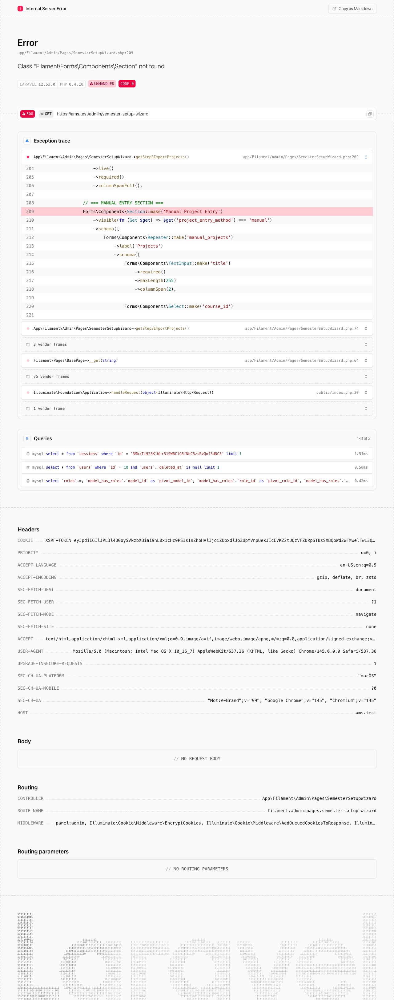
name, academic_year, start_date, and end_date. The currently authenticated coordinator is automatically assigned to the new semester via the coordinator_semester pivot table.PhaseTemplates, each showing the template name and its total_phase_marks. The coordinator selects which phases will be used in this semester.title, course, phase_template, specialization, supervisor, student_ids, and reviewer_ids), CSV import (file upload with row-level validation), or Skip (defer project creation). A CSV template can be downloaded for the import format.| Test ID | Description | Steps | Expected Result | Status |
|---|---|---|---|---|
| ADM-WIZ-001 | Complete wizard with manual project entry | 1. Navigate to /admin/semester-setup-wizard2. Step 1: Enter semester name, academic_year, start_date, end_date 3. Step 2: Select one or more phase templates 4. Step 3: Choose "Manual", add a project with all fields 5. Step 4: Review and confirm |
Semester created in semesters table. Coordinator linked in coordinator_semester. Phase templates associated. Project created in projects table with pivot entries in project_student and project_reviewer. |
|
| ADM-WIZ-002 | Wizard Step 1 validation | 1. Leave all fields empty in Step 1 2. Attempt to proceed to Step 2 |
Validation errors shown for all required fields: name, academic_year, start_date, and end_date. User cannot proceed to the next step until errors are resolved. | |
| ADM-WIZ-003 | Step 2 displays all phase templates with total marks | 1. Complete Step 1 with valid data 2. Proceed to Step 2 3. Verify the checkbox list |
All phase templates from the phase_templates table are listed with their names and total_phase_marks values. Checkboxes are unchecked by default. |
|
| ADM-WIZ-004 | CSV import with valid file | 1. Download the CSV template from the wizard 2. Fill in valid project data 3. In Step 3, choose "CSV Import" and upload the file 4. Proceed to Step 4 and confirm |
CSV rows are validated. Valid projects are created with correct relationships. All student and reviewer assignments are established via pivot tables. Success notification shown. | |
| ADM-WIZ-005 | CSV import with validation errors | 1. Upload a CSV with invalid data (e.g., non-existent supervisor ID, missing title) 2. Attempt to proceed |
Row-level validation errors are displayed indicating which rows and columns have issues. The wizard does not proceed until errors are fixed or invalid rows are removed. | |
| ADM-WIZ-006 | Skip project creation in Step 3 | 1. Complete Steps 1 and 2 2. In Step 3, choose "Skip" 3. Proceed to Step 4 and confirm |
Semester and phase template associations are created but no projects are created. The semester is ready for manual project addition later via the Projects resource. | |
| ADM-WIZ-007 | Coordinator is automatically assigned to new semester | 1. Complete the wizard as a coordinator 2. Check the coordinator_semester table |
A row exists in coordinator_semester linking the authenticated coordinator's user ID to the newly created semester's ID. |
|
| ADM-WIZ-008 | Download CSV template for project import | 1. In Step 3, click the "Download CSV Template" button 2. Open the downloaded file |
A CSV file is downloaded containing the expected column headers (title, course_id, phase_template_id, specialization_id, supervisor_id, student_ids, reviewer_ids) with no data rows. File format matches import expectations. |
| Table | Column | Type | Constraints | Screen Mapping |
|---|---|---|---|---|
| semesters | id | bigint | PRIMARY KEY, AUTO_INCREMENT | Created in Step 1 |
| semesters | name | varchar | NOT NULL | Step 1: Name text input |
| semesters | academic_year | varchar | NOT NULL | Step 1: Academic Year text input |
| semesters | start_date | date | NOT NULL | Step 1: Start Date picker |
| semesters | end_date | date | NOT NULL | Step 1: End Date picker |
| coordinator_semester | user_id | bigint | FK (users.id), Composite PK | Auto-assigned: authenticated coordinator |
| coordinator_semester | semester_id | bigint | FK (semesters.id), Composite PK | Auto-assigned: newly created semester |
| phase_templates | id | bigint | PRIMARY KEY | Step 2: Checkbox list options |
| phase_templates | name | varchar | NOT NULL | Step 2: Checkbox label text |
| phase_templates | total_phase_marks | decimal | NOT NULL | Step 2: Displayed alongside checkbox label |
| projects | id | bigint | PRIMARY KEY, AUTO_INCREMENT | Created in Step 3 (manual or CSV) |
| projects | title | varchar | NOT NULL | Step 3: Project title field / CSV column |
| projects | semester_id | bigint | FK (semesters.id) | Auto-set to newly created semester |
| project_student | project_id, user_id | bigint, bigint | Composite PK | Step 3: Student IDs assignment |
| project_reviewer | project_id, user_id | bigint, bigint | Composite PK | Step 3: Reviewer IDs assignment |
Route: /admin/bulk-import-users
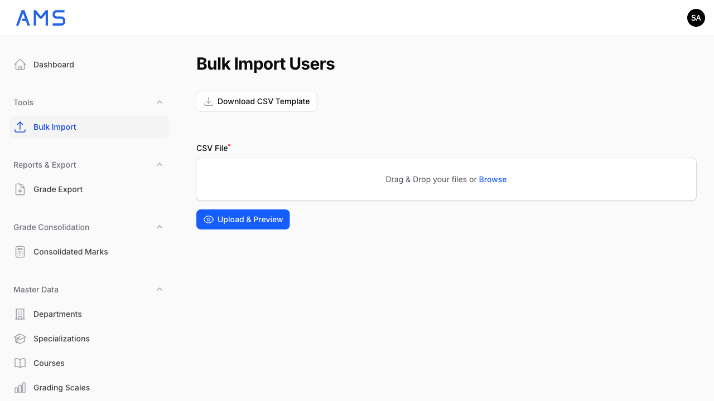
university_id, name, email, and role. The system performs comprehensive validation including: university_id uniqueness (checked against both the database and within the CSV itself to catch intra-file duplicates), email uniqueness (same dual check), email format validation, and valid role name verification.| Test ID | Description | Steps | Expected Result | Status |
|---|---|---|---|---|
| ADM-IMP-001 | Bulk import with valid CSV file | 1. Navigate to /admin/bulk-import-users2. Download the CSV template 3. Fill in valid data (university_id, name, email, role) 4. Upload the CSV file 5. Review the preview table 6. Confirm import |
All rows pass validation. Users are created in the users table with hashed auto-generated passwords. Roles are assigned via model_has_roles. Results CSV is available for download containing usernames and passwords. |
|
| ADM-IMP-002 | Duplicate university_id validation (database and intra-CSV) | 1. Create a CSV with two rows having the same university_id 2. Also include a university_id that already exists in the database 3. Upload and review preview |
Preview shows validation errors for both: the intra-CSV duplicate (second occurrence flagged) and the database duplicate. Affected rows are marked as failed. Valid rows can still be imported. | |
| ADM-IMP-003 | Duplicate email validation (database and intra-CSV) | 1. Create a CSV with duplicate emails within the file 2. Include an email already registered in the database 3. Upload and review preview |
Validation errors shown for both intra-CSV email duplicates and database email conflicts. Error messages clearly indicate which validation failed. | |
| ADM-IMP-004 | Non-Super Admin cannot assign elevated roles | 1. Login as a Coordinator (non-Super Admin) 2. Upload a CSV with a row where role = "Super Admin" 3. Upload another row where role = "Coordinator" 4. Review preview |
Rows with "Super Admin" and "Coordinator" roles are flagged with validation errors. Only roles like Student, Supervisor, and Reviewer are permitted for non-Super Admin importers. | |
| ADM-IMP-005 | Invalid email format validation | 1. Create a CSV with an invalid email format (e.g., "not-an-email") 2. Upload and review preview |
The row with the invalid email is flagged with a validation error: "The email must be a valid email address." The row cannot be imported. | |
| ADM-IMP-006 | Download results CSV with generated passwords | 1. Complete a successful bulk import 2. Click "Download Results CSV" 3. Open the downloaded file |
CSV file contains all successfully created users with columns: university_id, name, email, role, and the generated plain-text password. Passwords are 12 characters long. This file is the only way to retrieve the generated passwords. |
| Table | Column | Type | Constraints | Screen Mapping |
|---|---|---|---|---|
| users | university_id | varchar | UNIQUE, NOT NULL | CSV column: university_id (validated for uniqueness) |
| users | name | varchar | NOT NULL | CSV column: name |
| users | varchar | UNIQUE, NOT NULL, email format | CSV column: email (validated for format and uniqueness) | |
| users | password | varchar | NOT NULL (hashed) | Auto-generated 12-character password (hashed on insert) |
| users | created_at | timestamp | NOT NULL | Auto-set during bulk creation |
| model_has_roles | model_id | bigint | Composite PK | Newly created user's ID |
| model_has_roles | role_id | bigint | FK (roles.id), Composite PK | Role from CSV column, validated against roles table |
| model_has_roles | model_type | string | Composite PK | Set to App\Models\User |
| roles | name | string | UNIQUE(name, guard_name) | Validated against CSV role column values |
Route: /admin/grade-export
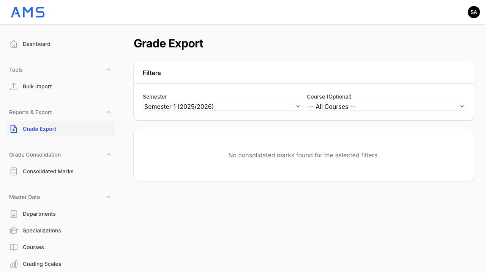
Semester dropdown (scoped to the coordinator's assigned semesters, defaulting to the most recent active semester) and a Course dropdown (dynamically populated with courses that have projects in the selected semester).university_id, student name, project title, calculated score, override score, final score (displayed with 2 decimal places), and letter grade (looked up from the grading scales table).grade-report Blade view with formatted tables, headers, and institution branding.
| Test ID | Description | Steps | Expected Result | Status |
|---|---|---|---|---|
| ADM-EXP-001 | Semester dropdown defaults to most recent active semester | 1. Navigate to /admin/grade-export2. Check the semester dropdown's default selection |
The semester dropdown is pre-selected with the most recent active semester assigned to the current coordinator. If no active semester exists, the dropdown is empty or displays a prompt. | |
| ADM-EXP-002 | Course dropdown filters by selected semester | 1. Select a specific semester from the dropdown 2. Open the course dropdown 3. Verify listed courses |
Only courses that have at least one project in the selected semester are listed. Courses with no projects in that semester are excluded from the dropdown. | |
| ADM-EXP-003 | Preview table displays correct grade data | 1. Select a semester and course 2. Verify the preview table data against the database |
Preview table shows all students with consolidated marks for projects in the selected semester and course. Final scores are displayed to 2 decimal places. Letter grades match the grading_scales lookup. Override scores are shown where applicable. |
|
| ADM-EXP-004 | Export CSV downloads correct file | 1. Select semester and course filters 2. Click "Export CSV" 3. Open the downloaded file |
CSV file is streamed as a download. Contains columns: university_id, student name, project title, calculated score, override score, final score, letter grade. Data matches the preview table exactly. File encoding is UTF-8. | |
| ADM-EXP-005 | Export PDF generates formatted report | 1. Select semester and course filters 2. Click "Export PDF" 3. Open the downloaded PDF |
PDF is generated using Barryvdh DomPDF with the grade-report Blade template. Document contains formatted tables with student grades, institution headers, and proper layout. Data matches the preview table. |
| Table | Column | Type | Constraints | Screen Mapping |
|---|---|---|---|---|
| semesters | id | bigint | PRIMARY KEY | Semester dropdown options |
| semesters | name | varchar | NOT NULL | Semester dropdown label text |
| coordinator_semester | user_id, semester_id | bigint, bigint | Composite PK | Coordinator scoping for semester dropdown |
| courses | id | bigint | PRIMARY KEY | Course dropdown options (filtered by semester) |
| courses | title | varchar | NOT NULL | Course dropdown label text |
| projects | semester_id | bigint | FK (semesters.id) | Links projects to selected semester |
| projects | course_id | bigint | FK (courses.id) | Links projects to selected course |
| projects | title | varchar | NOT NULL | Preview table: project title column |
| consolidated_marks | student_id | bigint | FK (users.id), CASCADE | Preview table: student name and university_id |
| consolidated_marks | total_calculated_score | decimal(8,2) | NOT NULL | Preview table: calculated score column |
| consolidated_marks | override_score | decimal(8,2) | NULL | Preview table: override score column |
| users | university_id | varchar | UNIQUE, NOT NULL | Preview table: university_id column |
| users | name | varchar | NOT NULL | Preview table: student name column |
| grading_scales | letter_grade | varchar(10) | NOT NULL | Preview table: letter grade column |
| grading_scales | min_score | decimal(5,2) | NOT NULL | Grade lookup: lower bound |
| grading_scales | max_score | decimal(5,2) | NOT NULL | Grade lookup: upper bound |
Academic Management System (AMS) — Admin Panel Documentation
Generated: March 2026 | Confidential — For Internal Use Only